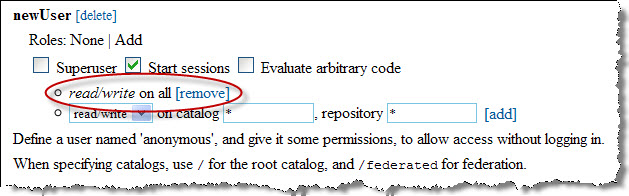
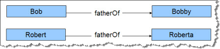
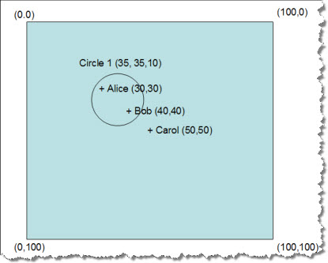
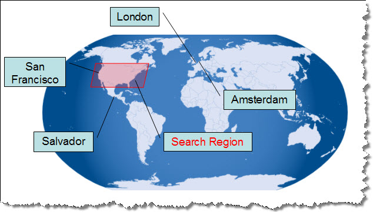
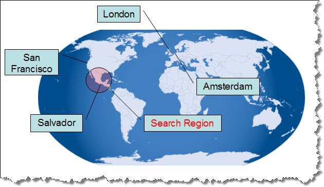
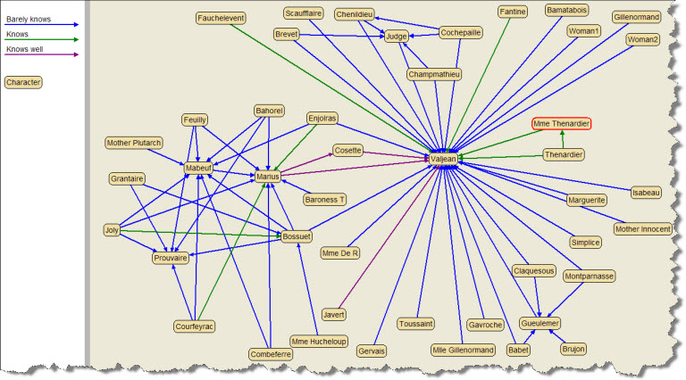
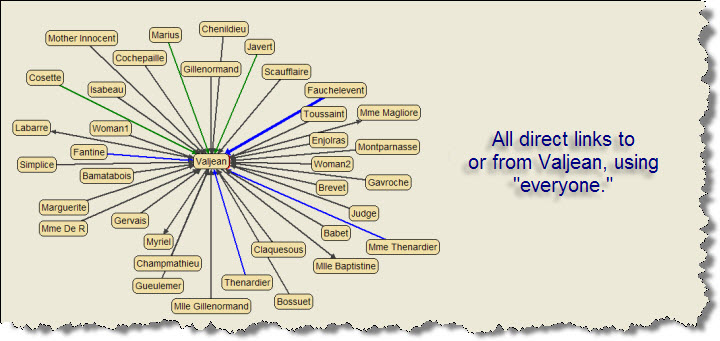
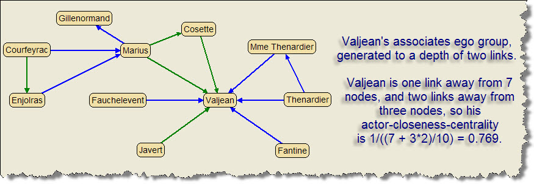

Java Sesame API Tutorial for AllegroGraph
This is an introduction to the Java client API to the AllegroGraph RDFStore™ from Franz Inc.
The Java Sesame API offers convenient and efficient
access to an AllegroGraph server from a Java-based application. This API provides methods for
creating, querying and maintaining RDF data, and for managing the stored triples.
The Java Sesame API emulates the Eclipse RDF4J (formerly known as Aduna Sesame) API to make it easier to migrate from RDF4J to AllegroGraph.
Contents
The Java client tutorial rests on a simple architecture involving AllegroGraph, disk-based data files, Java, and a file of Java examples called TutorialExamples.java.
The AllegroGraph Java client distribution contains the Java Sesame API.
The Java client communicates with the AllegroGraph Server through HTTP port 10035 in this tutorial. Java and AllegroGraph may be installed on the same computer, but in practice one server is shared by multiple clients running on different machines.
Load TutorialExamples.java into Java to view the tutorial examples. |
 |
Each lesson in TutorialExamples.java is encapsulated in a Java method, named exampleN(), where N ranges from 0 to 21 (or more). The function names are referenced in the title of each section to make it easier to compare the tutorial text and the living code of the examples file.
The tutorial examples can be run on a Linux system, running AllegroGraph and the examples on the same computer ("localhost"). The tutorial assumes that AllegroGraph has been installed and configured using the procedure posted on this webpage.
We need to clarify some terminology before proceeding.
- "RDF" is the Resource Description Framework defined by the World Wide Web Consortium (W3C). It provides an elegantly simple means for describing multi-faceted resource objects and for linking them into complex relationship graphs. AllegroGraph Server creates, searches, and manages such RDF graphs.
- A "URI" is a Uniform Resource Identifier. It is a label used to uniquely identify various types of entities in an RDF graph. A typical URI looks a lot like a web address: http://example.org/project/class#number. In spite of the resemblance, a URI is not a web address. It is simply a unique label.
- A "triple" is a data statement, a "fact," stored in RDF format. It states that a resource has an attribute with a value. It consists of three fields:
- Subject: The first field contains the URI that uniquely identifies the resource that this triple describes.
- Predicate: The second field contains the URI identifying a property of this resource, such as its color or size, or a relationship between this resource and another one, such as parentage or ownership.
- Object: The third field is the value of the property. It could be a literal value, such as "red," or the URI of a linked resource.
- A "quad" is a triple with an added "context" field, which is used to divide the repository into "subgraphs." This context or subgraph is just a URI label that appears in the fourth field of related triples.
- A "quint" is a quad with a fifth field used for the "tripleID." AllegroGraph Server implements all triples as quints behind the scenes. The fourth and fifth fields are often ignored, however, so we speak casually of "triples," and sometimes of "quads," when it would be more rigorous to call them all "quints."
- A "resource description" is defined as a collection of triples that all have the same URI in the subject field. In other words, the triples all describe attributes of the same thing.
- A "statement" is a client-side Java object that describes a triple (quad, quint).
In the context of AllegroGraph Server:
- A "catalog" is a list of repositories owned by an AllegroGraph server.
- A "repository" is a collection of triples within a Catalog, stored and indexed on a hard disk.
- A "context" is a subgraph of the triples in a repository.
- If contexts are not in use, the triples are stored in the background (default) graph.
|
 |
Creating Users with WebView Return to Top
Each connection to an AllegroGraph server runs under the credentials of a registered AllegroGraph user account.
Initial Superuser Account
The installation instructions for AllegroGraph advise you to create a default superuser called "test", with password "xyzzy". This is the user (and password) expected by the tutorial examples. If you created this account as directed, you can proceed to the next section and return to this topic at a later time when you need to create non-superuser accounts.
If you created a different superuser account you'll have to edit the TutorialExamples.java file before proceeding. Modify these entries near the top of the file:
static private final String USERNAME = "test";
static private final String PASSWORD = "xyzzy";
Otherwise you'll get an authentication failure when you attempt to connect to the server.
Users, Permissions, Access Rules, and Roles
AllegroGraph user accounts may be given any combination of the following three permissions:
- Superuser
- Start Session
- Evaluate Arbitrary Code
In addition, a user account may be given read, write or read/write access to individual repositories.
You can also define a role (such as "librarian") and give the role a set of permissions and access rules. Then you can assign several users to a shared role. This lets you manage their permissions and access by editing the role instead of the individual user accounts.
A superuser automatically has all possible permissions and unlimited access. A superuser can also create, manage and delete other user accounts. Non-superusers cannot view or edit account settings.
A user with the Start Sessions permission can use the AllegroGraph features that require spawning a dedicated session, such as Transactions and Social Network Analysis. If you try to use these features without the appropriate permission, you'll encounter authentication errors.
A user with permission to Evaluate Arbitrary Code can run Prolog Rule Queries.
This user can also do anything else that allows executing Lisp code, such as defining select-style generators, or doing eval-in-server, as well as loading server-side files.
WebView
WebView is AllegroGraph's HTTP-based graphical user interface for user and repository management. It provides a SPARQL endpoint for querying your triple stores as well as various tools that let you create and maintain triple stores interactively.
To connect to WebView, simply direct your Web browser to the AllegroGraph port of your server. If you have installed AllegroGraph locally (and used the default port number), use:
http://localhost:10035
You will be asked to log in. Use the superuser credentials described in the previous section.
The first page of WebView is a summary of your catalogs, repositories, and federations. Click the user account link in the lower left corner of the page. This exposes the Users and Roles page.

This is the environment for creating and managing user accounts.
To create a new user, click the [add a user] link. This exposes a small form where you can enter the username (one symbol) and password. Click OK to save the new account.
The new user will appear in the list of users. Click the [view permissions] link to open a control panel for the new user account:

Use the checkboxes to apply permissions to this account (superuser, start session, evaluate arbitrary code).
It is important that you set up access permissions for the new user. Use the form to create an access rule by selecting read, write or read/write access, naming a catalog (or * for all), and naming a repository within that catalog (or * for all). Click the [add] link. This creates an access rule for your new user. The access rule will appear in the permissions display:

This new user can log in and perform transactions on any repository in the system.
To repeat, the "test" superuser is all you need to run all of the tutorial examples. This section is for the day when you want to issue more modest credentials to some of your operators.
Creating a Repository and Triple Indices (example1()) Return to Top
The first task is to start our AllegroGraph Server and open a repository. This task is implemented in example1() from TutorialExamples.java.
In example1() we build a chain of Java objects, ending in a "connection" object that lets us manipulate triples in a specific repository. The overall process of generating the connection object follows
this diagram:
The example1() function opens (or creates) a repository by building a series of client-side objects, culminating in a "connection" object. The connection object will be passed to other methods in TutorialExamples.java.
We will also make use of the repository's "value factory." |
 |
The example first connects to an AllegroGraph Server by providing the endpoint (host IP address and port number) of an already-launched AllegroGraph server. You'll also need a user name and password. This creates a client-side server object, which can access the AllegroGraph server's list of available catalogs through the listCatalogs() method:
public class TutorialExamples {
private static final String SERVER_URL = "http://localhost:8080";
private static final String CATALOG_ID = "scratch";
private static final String REPOSITORY_ID = "javatutorial";
private static final String USERNAME = "test";
private static final String PASSWORD = "xyzzy";
private static final File DATA_DIR = new File(".");
private static final String FOAF_NS = "http://xmlns.com/foaf/0.1/";
/**
* Creating a Repository
*/
public static AGRepositoryConnection example1(boolean close) throws Exception {
// Tests getting the repository up.
println("\nStarting example1().");
AGServer server = new AGServer(SERVER_URL, USERNAME, PASSWORD);
println("Available catalogs: " + server.listCatalogs());
This is the output so far:
Starting example1().
Available catalogs: [/, java-catalog, python-catalog]
These examples use either the default root catalog (denoted as "/") or catalogs dedicated to specific tutorials.
In the next line of example1(), we use the server's getRootCatalog() method to create a client-side catalog object connected to AllegroGraph's default rootCatalog, as defined in the AllegroGraph configuration file. The catalog object has methods such as getCatalogName() and getAllRepositories() that we can use to investigate the catalogs on the AllegroGraph server. When we look inside the root catalog, we can see which repositories are available:
AGCatalog catalog = server.getRootCatalog();
println("Available repositories in catalog " +
(catalog.getCatalogName()) + ": " +
catalog.listRepositories());
The corresponding output lists the available repositories. (When you run the examples, you may see a different list of repositories.)
Available repositories in catalog /: [pythontutorial, javatutorial]
In the examples, we are careful to close open repositories and to delete previous state before continuing. We are just erasing the blackboard before starting a new lesson. You probably would not do this in your actual application:
closeAll();
catalog.deleteRepository(REPOSITORY_ID);
The next step is to create a client-side repository object representing the repository we wish to open, by calling the
createRepository() method of the catalog object. We have to provide the name of the desired repository (REPOSITORY_ID in this case, which is bound to the string "javatutorial").
AGRepository myRepository = catalog.createRepository(REPOSITORY_ID);
println("Got a repository.");
myRepository.initialize();
println("Initialized repository.");
println("Repository is writable? " + myRepository.isWritable());
A new or renewed repository must be initialized, using the initialize() method of the repository object. If you try to initialize a repository twice you get a warning message in the Java window but no exception. Finally we check to see that the repository is writable.
Got a repository.
Initialized repository.
Repository is writable? true
The goal of all this object-building has been to create a client-side repositoryConnection object, which we casually refer to as the "connection" or "connection object." The repository object's getConnection() method returns this connection object. The function closeBeforeExit() maintains a list of connection objects and automatically cleans them up when the client exits.
AGRepositoryConnection conn = myRepository.getConnection();
closeBeforeExit(conn);
println("Got a connection.");
println("Repository " + (myRepository.getRepositoryID()) +
" is up! It contains " + (conn.size()) +
" statements."
);
The size() method of the connection object returns how many triples are present. In the example1() function, this number should always be zero because we deleted and recreated the repository. This is the output in the Java window:
Got a connection.
Repository javatutorial is up! It contains 0 statements.
Whenever you create a new repository, you should stop to consider which kinds of triple indices you will need. This is an important efficiency decision. AllegroGraph uses a set of sorted indices to quickly identify a contiguous block of triples that are likely to match a specific query pattern.
These indices are identified by names that describe their organization. The default set of indices are called spogi, posgi, ospgi, gspoi, gposi, gospi, and i , where:
- S stands for the subject URI.
- P stands for the predicate URI.
- O stands for the object URI or literal.
- G stands for the graph URI.
- I stands for the triple identifier (its unique id number within the triple store).
The order of the letters denotes how the index has been organized. For instance, the spogi index contains all of the triples in the store, sorted first by subject, then by predicate, then by object, and finally by graph. The triple id number is present as a fifth column in the index. If you know the URI of a desired resource (the subject value of the query pattern), then the spogi index lets you retrieve all triples with that subject as a single block.
The idea is to provide your respository with the indices that your queries will need, and to avoid maintaining indices that you will never need.
We can use the connection object's listValidIndices() method to examine the list of all possible AllegroGraph triple indices:
List<String> indices = conn.listValidIndices();
println("All valid triple indices: " + indices);
This is the list of all possible valid indices:
All valid triple indices: [spogi, spgoi, sopgi, sogpi, sgpoi, sgopi, psogi,
psgoi, posgi, pogsi, pgsoi, pgosi, ospgi, osgpi, opsgi, opgsi, ogspi, ogpsi,
gspoi, gsopi, gpsoi, gposi, gospi, gopsi, i]
AllegroGraph can generate any of these indices if you need them, but it creates only seven indices by default. We can see the current indices by using the connection object's listIndices() method:
indices = conn.listIndices();
println("Current triple indices: " + indices);
There are currently seven indices:
Current triple indices: [i, gospi, gposi, gspoi, ospgi, posgi, spogi]
The indices that begin with "g" are sorted primarily by subgraph (or "context"). If you application does not use subgraphs, you should consider removing these indices from the repository. You don't want to build and maintain triple indices that your application will never use. This wastes CPU time and disk space. The connection object has a convenient dropIndex() method:
println("Removing graph indices...");
conn.dropIndex("gospi");
conn.dropIndex("gposi");
conn.dropIndex("gspoi");
indices = conn.listIndices();
println("Current triple indices: " + indices);
Having dropped three of the triple indices, there are now four remaining:
Removing graph indices...
Current triple indices: [i, ospgi, posgi, spogi]
The i index is for deleting triples by using the triple id number. The ospgi index is sorted primarily by object value, which makes it possible to grab a range of object values as a single block of triples from the index. Similarly, the posgi index lets us reach for a block of triples that all share the same predicate. We mentioned previously that the spogi index lets us retrieve blocks of triples that all have the same subject URI.
As it happens, we may have been overly hasty in eliminating all of the graph indices. AllegroGraph can find the right matches as long as there is any one index present, but using the "right" index is much faster. Let's put one of the graph indices back, just in case we need it. We'll use the connection object's addIndex() method:
println("Adding one graph index back in...");
conn.addIndex("gspoi");
indices = conn.listIndices();
println("Current triple indices: " + indices);
Adding one graph index back in...
Current triple indices: [i, gspoi, ospgi, posgi, spogi]
In its default mode, example1() closes the connection. It can optionally return the connection when called by another method, as will occur in several examples below. If you are done with the connection, closing it and shutting it down will free resources.
if (close) {
conn.close();
myRepository.shutDown();
return null;
}
return conn;
}
Asserting and Retracting Triples (example2()) Return to Top
In example2(), we show how
to create resources describing two
people, Bob and Alice, by asserting individual triples into the repository. The example also retracts and replaces a triple. Assertions and retractions to the triple store
are executed by 'add' and 'remove' methods belonging to the connection object, which we obtain by calling the example1() function (described above).
Before asserting a triple, we have to generate the URI values for the subject, predicate and object fields. The Java Sesame API to AllegroGraph Server predefines a number of classes and predicates for the RDF, RDFS, XSD, and OWL ontologies. RDF.TYPE is one of the predefined predicates we will use.
The 'add' and 'remove' methods take an optional 'contexts' argument that
specifies one or more subgraphs that are the target of triple assertions
and retractions. When the context is omitted, triples are asserted/retracted
to/from the background graph. In the example below, facts about Alice and Bob
reside in the background graph.
The example2() function begins by calling example1() to create the appropriate connection object, which is bound to the variable conn. We will also need the repository's "value factory" object, because it has many useful methods. If we have the connection object, we can retrieve its repository object, and then the value factory. We will need both objects in order to proceed.
public static AGRepositoryConnection example2(boolean close) throws RepositoryException {
// Asserts some statements and counts them.
AGRepositoryConnection conn = example1(false);
AGValueFactory vf = conn.getRepository().getValueFactory();
println("Starting example example2().");
The next step is to begin assembling the URIs we will need for the new triples. The valueFactory's createURI() method generates a URI from a string. These are the subject URIs identifying the resources "Bob" and "Alice":
URI alice = vf.createURI("http://example.org/people/alice");
URI bob = vf.createURI("http://example.org/people/bob");
Both Bob and Alice will have a "name" attribute.
URI name = vf.createURI("http://example.org/ontology/name");
Bob and Alice will both be rdf:type "Person". Note that this is the name of a class, and is therefore capitalized.
URI person = vf.createURI("http://example.org/ontology/Person");
The name attributes will contain literal values. We have to generate the Literal objects from strings:
Literal bobsName = vf.createLiteral("Bob");
Literal alicesName = vf.createLiteral("Alice");
The next line prints out the number of triples currently in the repository.
println("Triple count before inserts: " +
(conn.size()));
Triple count before inserts: 0
Now we assert four triples, two for Bob and two more for Alice, using the connection object's add() method. Note the use of RDF.TYPE, which is an attribute of the RDF object in
org.eclipse.rdf4j.model.vocabulary. This attribute is set the the URI of the rdf:type predicate, which is used to indicate the class of a resource.
// Alice's name is "Alice"
conn.add(alice, name, alicesName);
// Alice is a person
conn.add(alice, RDF.TYPE, person);
//Bob's name is "Bob"
conn.add(bob, name, bobsName);
//Bob is a person, too.
conn.add(bob, RDF.TYPE, person);
After the assertions, we count triples again (there should be four) and print out the triples for inspection. The "null" arguments to the getStatements() method say that we don't want to restrict what values may be present in the subject, predicate, object or context positions. Just print out all the triples.
println("Triple count after inserts: " +
(conn.size()));
RepositoryResult<Statement> result = conn.getStatements(null, null, null, false);
while (result.hasNext()) {
Statement st = result.next();
println(st);
}
This is the output at this point. We see four triples, two about Alice and two about Bob:
Triple count after inserts: 4
(http://example.org/people/alice, http://example.org/ontology/name, "Alice") [null]
(http://example.org/people/alice, http://www.w3.org/1999/02/22-rdf-syntax-ns#type, http://example.org/ontology/Person) [null]
(http://example.org/people/bob, http://example.org/ontology/name, "Bob") [null]
(http://example.org/people/bob, http://www.w3.org/1999/02/22-rdf-syntax-ns#type, http://example.org/ontology/Person) [null]
We see two resources of type "person," each with a literal name. The [null] value at the end of each triple indicates that the triple is resident in the default background graph, rather than being assigned to a specific named subgraph.
The next step is to demonstrate how to remove a triple. Use the remove() method of the connection object, and supply a triple pattern that matches the target triple. In this case we want to remove Bob's name triple from the repository. Then we'll count the triples again to verify that there are only three remaining. Finally, we re-assert Bob's name so we can use it in subsequent examples, and we'll return the connection object.
conn.remove(bob, name, bobsName);
println("Removed one triple.");
println("Triple count after deletion: " +
(conn.size()));
Removed one triple.
Triple count after deletion: 3
Example2() ends with a condition that either closes the connection or passes it on to the next method for reuse.
A SPARQL Query (example3()) Return to Top
SPARQL stands for the "SPARQL Protocol and RDF Query Language," a recommendation of the World Wide Web Consortium (W3C). SPARQL is a query language for retrieving RDF triples.
Our next example illustrates how to evaluate a SPARQL query. This is the simplest query, the one that returns all triples. Note that example3() continues with the four triples created in example2().
public static void example3() throws Exception {
AGRepositoryConnection conn = example2(false);
println("\nStarting example3().");
try {
String queryString = "SELECT ?s ?p ?o WHERE {?s ?p ?o .}";
The SELECT clause returns the variables ?s, ?p and ?o. The variables are bound to the subject, predicate and object values of each triple that satisfies the WHERE clause. In this case the WHERE clause is unconstrained. The dot (.) in the fourth position signifies the end of the pattern.
The connection object's prepareTupleQuery() method
creates a query object that can be evaluated one or more times. (A "tuple" is an ordered sequence of data elements.) The results are returned in a TupleQueryResult iterator that gives access to a sequence of bindingSets.
AGTupleQuery tupleQuery = conn.prepareTupleQuery(QueryLanguage.SPARQL, queryString);
TupleQueryResult result = tupleQuery.evaluate();
Below we illustrate one method for extracting the values
from a binding set, indexed by the name of the corresponding column variable
in the SELECT clause.
try {
while (result.hasNext()) {
BindingSet bindingSet = result.next();
Value s = bindingSet.getValue("s");
Value p = bindingSet.getValue("p");
Value o = bindingSet.getValue("o");
System.out.format("%s %s %s\n", s, p, o);
}
http://example.org/people/alice http://www.w3.org/1999/02/22-rdf-syntax-ns#type http://example.org/ontology/Person
http://example.org/people/alice http://example.org/ontology/name "Alice"
http://example.org/people/bob http://www.w3.org/1999/02/22-rdf-syntax-ns#type http://example.org/ontology/Person
http://example.org/people/bob http://example.org/ontology/name "Bob"
If one wants only the number of results, using the count() method is more efficient than using evaluate() and counting the returned results client-side. The repositoryConnection class is designed to be created for the duration of a sequence of updates and queries, and then closed. In practice, many AllegroGraph applications keep a connection open indefinitely. However, best practice dictates that the connection should be closed, as illustrated below. The same hygiene applies to the iterators that generate binding sets.
} finally {
result.close();
}
// Just the count now. The count is done server-side,
// and only the count is returned.
long count = tupleQuery.count();
println("count: " + count);
} finally {
conn.close();
}
Statement Matching (example4()) Return to Top
The getStatements() method of the connection object provides a simple way to perform unsophisticated queries. This method lets you enter a mix of required values and wildcards, and retrieve all matching triples. (If you need to perform sophisticated tests and comparisons you should use the SPARQL query instead.)
This is the example4() function of TutorialExamples.java. It begins by calling example2() to create a connection object and populate the javarepository with four triples describing Bob and Alice.
public static void example4() throws RepositoryException {
RepositoryConnection conn = example2(false);
closeBeforeExit(conn);
We're going to search for triples that mention Alice, so we have to create an "Alice" URI to use in the search pattern. This requires us to build the bridge from the connection back to the valueFactory:
Repository myRepository = conn.getRepository();
URI alice = myRepository.getValueFactory().createURI("http://example.org/people/alice");
Now we search for triples with Alice's URI in the subject position. The "null" values are wildcards for the predicate and object positions of the triple.
RepositoryResult<Statement> statements = conn.getStatements(alice, null, null, false);
The getStatements() method returns a repositoryResult object (bound to the variable "statements" in this case). This object can be iterated over, exposing one result statement at a time. It is sometimes desirable to screen the results for duplicates, using the enableDuplicateFilter() method. Note, however, that duplicate filtering can be expensive. Our example does not contain any duplicates, but it is possible for them to occur.
try {
statements.enableDuplicateFilter();
while (statements.hasNext()) {
println(statements.next());
}
This prints out the two matching triples for "Alice."
(http://example.org/people/alice, http://www.w3.org/1999/02/22-rdf-syntax-ns#type, http://example.org/ontology/Person) [null]
(http://example.org/people/alice, http://example.org/ontology/name, "Alice") [null]
At this point it is good form to close the repositoryResponse object because it occupies memory and is rarely reused in most programs. We can also close the connection and shut down the repository.
} finally {
statements.close();
}
conn.close();
myRepository.shutDown();
}
Literal Values (example5()) Return to Top
The next example, example5(), illustrates some variations on what we have seen so far. The example creates and asserts typed and plain literal values, including language-specific plain literals, and then conducts searches for them in three ways:
- getStatements() search, which is an efficient way to match a single triple pattern.
- SPARQL direct match, for efficient multi-pattern search.
- SPARQL filter match, for sophisticated filtering such as performing range matches.
The getStatements() and SPARQL direct searches return exactly the datatype you ask for. The SPARQL filter queries can sometimes return multiple datatypes. This behavior will be one focus of this section.
If you are not explicit about the datatype of a value, either when asserting the triple or when writing a search pattern, AllegroGraph will deduce an appropriate datatype and use it. This is another focus of this section. This helpful behavior can sometimes surprise you with unanticipated results.
Setup
Example5() begins by obtaining a connection object from example1(), and then clears the repository of all existing triples.
public static void example5() throws Exception {
RepositoryConnection conn = example2(false);
Repository myRepository = conn.getRepository();
ValueFactory f = myRepository.getValueFactory();
println("\nStarting example5().");
conn.clear();
For sake of coding efficiency, it is good practice to create variables
for namespace strings. We'll use this namespace again and again in the
following lines. We have made the URIs in this example very short to
keep the result displays compact.
String exns = "http://people/";
The example creates new resources describing seven people, named
alphabetically from Alice to Greg. These are URIs to use in the
subject field of the triples. The example shows how to enter a full
URI string (Alice through Dave), or alternately how to combine a
namespace with a local resource name (Eric through Greg).
URI alice = f.createURI("http://people/alice");
URI bob = f.createURI("http://people/bob");
URI carol = f.createURI("http://people/carol");
URI dave = f.createURI("http://people/dave");
URI eric = f.createURI(exns, "eric");
URI fred = f.createURI(exns, "fred");
URI greg = f.createURI(exns "greg");
Numeric Literal Values
This section explores the behavior of numeric literals.
Asserting Numeric Data
The first section assigns ages to the participants, using a variety of numeric types. First we need a URI for the "age" predicate.
URI age = f.createURI(exns, "age");
The next step is to create a variety of values representing ages. Coincidentally, these people are all 42 years old, but we're going to record that information in multiple ways:
Literal fortyTwo = f.createLiteral(42); // creates int
Literal fortyTwoDecimal = f.createLiteral(42.0); // creates float
Literal fortyTwoInt = f.createLiteral("42", XMLSchema.INT);
Literal fortyTwoLong = f.createLiteral("42", XMLSchema.LONG);
Literal fortyTwoFloat = f.createLiteral("42", XMLSchema.FLOAT);
Literal fortyTwoString = f.createLiteral("42", XMLSchema.STRING);
Literal fortyTwoPlain = f.createLiteral("42"); // creates plain literal
In four of these statements, we explicitly identified the datatype of the value in order to create an INT, a LONG, a DOUBLE and a STRING. This is the best practice.
In three other statements, we just handed AllegroGraph numeric-looking values to see what it would do with them. As we will see in a moment, 42 creates an INT, 42.0 becomes into a DOUBLE, and "42" becomes a "plain" (untyped) literal value. (Note that plain literals are not quite the same thing as typed literal strings. A search for a plain literal will not always match a typed string, and vice versa.)
Now we need to assemble the URIs and values into statements (which are client-side triples):
Statement stmt1 = f.createStatement(alice, age, fortyTwo);
Statement stmt2 = f.createStatement(bob, age, fortyTwoDecimal);
Statement stmt3 = f.createStatement(carol, age, fortyTwoInt);
Statement stmt4 = f.createStatement(dave, age, fortyTwoLong);
Statement stmt5 = f.createStatement(eric, age, fortyTwoFloat);
Statement stmt6 = f.createStatement(fred, age, fortyTwoString);
Statement stmt7 = f.createStatement(greg, age, fortyTwoPlain);
And then add the statements to the triple store on the AllegroGraph server. We can use either add() or addStatement() for this purpose.
conn.add(stmt1);
conn.add(stmt2);
conn.add(stmt3);
conn.add(stmt4);
conn.add(stmt5);
conn.add(stmt6);
conn.add(stmt7);
Now we'll complete the round trip to see what triples we get back from these assertions. This is how we use getStatements() in this example to retrieve and display age triples for us:
println("\nShowing all age triples using getStatements(). Seven matches.");
RepositoryResult<Statement> statements = conn.getStatements(null, age, null, false);
try {
while (statements.hasNext()) {
println(statements.next());
}
} finally {
statements.close();
}
This loop prints all age triples to the interaction window. Note that the retrieved triples are of six types: two ints, a long, a float, a double, a long, a string, and a "plain literal." All of them say that their person's age is 42. Note that the triple for Greg has the plain literal value "42", while the triple for Fred uses "42" as a string.
Showing all age triples using getStatements(). Seven matches.
(http://people/greg, http://people/age, "42") [null]
(http://people/fred, http://people/age, "42"^^<http://www.w3.org/2001/XMLSchema#string>) [null]
(http://people/eric, http://people/age, "4.2E1"^^<http://www.w3.org/2001/XMLSchema#float>) [null]
(http://people/dave, http://people/age, "42"^^<http://www.w3.org/2001/XMLSchema#long>) [null]
(http://people/carol, http://people/age, "42"^^<http://www.w3.org/2001/XMLSchema#int>) [null]
(http://people/bob, http://people/age, "4.2E1"^^<http://www.w3.org/2001/XMLSchema#double>) [null]
(http://people/alice, http://people/age, "42"^^<http://www.w3.org/2001/XMLSchema#int>) [null]
If you ask AllegroGraph for a specific datatype, you will get it. If you leave the decision up to AllegroGraph, you might get something unexpected such as an plain literal value.
Matching Numeric Data
This section explores getStatements() and SPARQL matches against numeric triples.
Match 42. In the first example, we asked AllegroGraph to find an untyped number, 42.
| Query Type |
Query |
Matches which types? |
| getStatements() |
conn.getStatements(null, age, 42, false) |
Illegal argument. |
| SPARQL direct match |
SELECT ?s ?p WHERE {?s ?p 42 .} |
No matches. |
| SPARQL filter match |
SELECT ?s ?p ?o WHERE {?s ?p ?o . filter (?o = 42)} |
"42"^^<http://www.w3.org/2001/XMLSchema#int>
"4.2E1"^^<http://www.w3.org/2001/XMLSchema#float>
"42"^^<http://www.w3.org/2001/XMLSchema#long>
"4.2E1"^^<http://www.w3.org/2001/XMLSchema#double> |
The getStatements() query cannot accept a text input parameter, so that experiment won't run. The SPARQL direct match didn't know how to interpret the untyped value and found zero matches. The SPARQL filter match, however, opened the doors to matches of multiple numeric types, and returned ints, floats, longs and doubles.
"Match 42.0" without explicitly declaring the number's type.
| Query Type |
Query |
Matches which types? |
| getStatements() |
conn.getStatements(null, age, 42.0, false) |
Illegal argument. |
| SPARQL direct match |
SELECT ?s ?p WHERE {?s ?p 42.0 .} |
No direct matches. |
| SPARQL filter match |
SELECT ?s ?p ?o WHERE {?s ?p ?o . filter (?o = 42.0)} |
"42"^^<http://www.w3.org/2001/XMLSchema#int>
"4.2E1"^^<http://www.w3.org/2001/XMLSchema#float>
"42"^^<http://www.w3.org/2001/XMLSchema#long>
"4.2E1"^^<http://www.w3.org/2001/XMLSchema#double> |
The getStatements() method cannot accept this input. The filter match returned all numeric types that were equal to 42.0.
"Match '42'^^<http://www.w3.org/2001/XMLSchema#int>." Note that we have to use a variable (fortyTwoInt) bound to a Literal value in order to offer this int to getStatements(). We can't just type the value into the getStatements() method directly.
| Query Type |
Query |
Matches which types? |
| getStatements() |
conn.getStatements(null, age, fortyTwoInt, false) |
"42"^^<http://www.w3.org/2001/XMLSchema#int>
|
| SPARQL direct match |
SELECT ?s ?p WHERE {?s ?p "42"^^<http://www.w3.org/2001/XMLSchema#int>} |
"42"^^<http://www.w3.org/2001/XMLSchema#int> |
| SPARQL filter match |
SELECT ?s ?p ?o WHERE {?s ?p ?o . filter (?o = "42"^^<http://www.w3.org/2001/XMLSchema#int>)} |
"42"^^<http://www.w3.org/2001/XMLSchema#int>
"4.2E1"^^<http://www.w3.org/2001/XMLSchema#float>
"42"^^<http://www.w3.org/2001/XMLSchema#long>
"4.2E1"^^<http://www.w3.org/2001/XMLSchema#double> |
Both the getStatements() query and the SPARQL direct query returned exactly what we asked for: ints. The filter match returned all numeric types that matches in value.
"Match '42'^^<http://www.w3.org/2001/XMLSchema#long>." Again we need a bound variable to offer a Literal value to getStatements().
| Query Type |
Query |
Matches which types? |
| getStatements() |
conn.getStatements(null, age, fortyTwoLong, false) |
"42"^^<http://www.w3.org/2001/XMLSchema#long>
|
| SPARQL direct match |
SELECT ?s ?p WHERE {?s ?p "42"^^<http://www.w3.org/2001/XMLSchema#long>} |
"42"^^<http://www.w3.org/2001/XMLSchema#long> |
| SPARQL filter match |
SELECT ?s ?p ?o WHERE {?s ?p ?o . filter (?o = "42"^^<http://www.w3.org/2001/XMLSchema#long>)} |
"42"^^<http://www.w3.org/2001/XMLSchema#int>
"4.2E1"^^<http://www.w3.org/2001/XMLSchema#float>
"42"^^<http://www.w3.org/2001/XMLSchema#long>
"4.2E1"^^<http://www.w3.org/2001/XMLSchema#double> |
Both the getStatements() query and the SPARQL direct query returned longs. The filter match returned all numeric types.
"Match '42'^^<http://www.w3.org/2001/XMLSchema#double>."
| Query Type |
Query |
Matches which types? |
| getStatements() |
conn.getStatements(null, age, fortyTwoDouble, false) |
"42"^^<http://www.w3.org/2001/XMLSchema#double>
|
| SPARQL direct match |
SELECT ?s ?p WHERE {?s ?p "42"^^<http://www.w3.org/2001/XMLSchema#double>} |
"42"^^<http://www.w3.org/2001/XMLSchema#double> |
| SPARQL filter match |
SELECT ?s ?p ?o WHERE {?s ?p ?o . filter (?o = "42"^^<http://www.w3.org/2001/XMLSchema#double>)} |
"42"^^<http://www.w3.org/2001/XMLSchema#int>
"4.2E1"^^<http://www.w3.org/2001/XMLSchema#float>
"42"^^<http://www.w3.org/2001/XMLSchema#long>
"4.2E1"^^<http://www.w3.org/2001/XMLSchema#double> |
Both the getStatements() query and the SPARQL direct query returned doubles. The filter match returned all numeric types.
Matching Numeric Strings and Plain Literals
At this point we are transitioning from tests of numeric matches to tests of string matches, but there is a gray zone to be explored first. What do we find if we search for strings that contain numbers? In particular, what about "plain literal" values that are almost, but not quite, strings?
"Match '42'^^<http://www.w3.org/2001/XMLSchema#string>." This example asks for a typed string to see if we get any numeric matches back.
| Query Type |
Query |
Matches which types? |
| getStatements() |
conn.getStatements(null, age, fortyTwoString, false) |
"42"^^<http://www.w3.org/2001/XMLSchema#string>
It did not match the plain literal.
|
| SPARQL direct match |
SELECT ?s ?p WHERE {?s ?p "42"^^<http://www.w3.org/2001/XMLSchema#string>} |
"42"^^<http://www.w3.org/2001/XMLSchema#string>
"42" This is the plain literal value. |
| SPARQL filter match |
SELECT ?s ?p ?o WHERE {?s ?p ?o . filter (?o = "42"^^<http://www.w3.org/2001/XMLSchema#string>)} |
"42"^^<http://www.w3.org/2001/XMLSchema#string>
"42" This is the plain literal value. |
The getStatements() query matched a literal string only. The SPARQL queries returned matches that were both typed strings and plain literals. There were no numeric matches.
"Match plain literal '42'." This example asks for a plain literal to see if we get any numeric matches back.
| Query Type |
Query |
Matches which types? |
| getStatements() |
conn.getStatements(null, age, fortyTwoPlain, false) |
"42" This is the plain literal. It did not match the string.
|
| SPARQL direct match |
SELECT ?s ?p WHERE {?s ?p "42"} |
"42"^^<http://www.w3.org/2001/XMLSchema#string>
"42" This is the plain literal value. |
| SPARQL filter match |
SELECT ?s ?p ?o WHERE {?s ?p ?o . filter (?o = "42")} |
"42"^^<http://www.w3.org/2001/XMLSchema#string>
"42" This is the plain literal value. |
The getStatements() query matched the plain literal only, and did not match the string. The SPARQL queries returned matches that were both typed strings and plain literals. There were no numeric matches.
The interesting lesson here is that AllegroGraph distinguishes between strings and plain literals when you use getStatements(), but it lumps them together when you use SPARQL.
Matching Strings
In this section we'll set up a variety of string triples and experiment with matching them using getStatements() and SPARQL. Note that Free Text Search is a different topic. In this section we're doing simple matches of whole strings.
Asserting String Values
We're going to add a "favorite color" attribute to five of the person resources we have used so far. First we need a predicate.
URI favoriteColor = f.createURI(exns, "favoriteColor");
Now we'll create a variety of string values, and a single "plain literal" value.
Literal UCred = f.createLiteral("Red");
Literal LCred = f.createLiteral("red");
Literal RedPlain = f.createLiteral("Red");
Literal rouge = f.createLiteral("rouge", XMLSchema.STRING);
Literal Rouge = f.createLiteral("Rouge", XMLSchema.STRING);
Literal RougePlain = f.createLiteral("Rouge");
Literal FrRouge = f.createLiteral("Rouge", "fr");
Note that in the last line we created a plain literal and assigned it a French language tag. You cannot assign a language tag to strings, only to plain literals. See typed and plain literal values for the specification.
Next we'll add these values to new triples in the triple store.
conn.add(alice, favoriteColor, UCred);
conn.add(bob, favoriteColor, LCred);
conn.add(carol, favoriteColor, RedPlain);
conn.add(dave, favoriteColor, rouge);
conn.add(eric, favoriteColor, Rouge);
conn.add(fred, favoriteColor, RougePlain);
conn.add(greg, favoriteColor, FrRouge);
If we run a getStatements() query for all favoriteColor triples, we get these values returned:
Showing all color triples using getStatements(). Should be seven.
(http://people/greg, http://people/favoriteColor, "Rouge"@fr) [null]
(http://people/fred, http://people/favoriteColor, "Rouge") [null]
(http://people/eric, http://people/favoriteColor, "Rouge"^^<http://www.w3.org/2001/XMLSchema#string>) [null]
(http://people/dave, http://people/favoriteColor, "rouge"^^<http://www.w3.org/2001/XMLSchema#string>) [null]
(http://people/carol, http://people/favoriteColor, "Red") [null]
(http://people/bob, http://people/favoriteColor, "red"^^<http://www.w3.org/2001/XMLSchema#string>) [null]
(http://people/alice, http://people/favoriteColor, "Red"^^<http://www.w3.org/2001/XMLSchema#string>) [null]
That's four typed strings, capitalized and lower case, plus three plain literals, one with a language tag.
Matching String Data
First let's search for "Red" without specifying a datatype.
"Match 'Red'." What happens if we search for "Red" without specifying a string datatype?
| Query Type |
Query |
Matches which types? |
| getStatements() |
conn.getStatements(null, age, "Red", false) |
Illegal value.
|
| SPARQL direct match |
SELECT ?s ?p WHERE {?s ?p "Red"} |
"Red"^^<http://www.w3.org/2001/XMLSchema#string>
"Red" This is the plain literal value. |
| SPARQL filter match |
SELECT ?s ?p ?o WHERE {?s ?p ?o . filter (?o = "Red")} |
"Red"^^<http://www.w3.org/2001/XMLSchema#string>
"Red" This is the plain literal value. |
The getStatements() query cannot accept the "Red" argument and cannot run. The SPARQL queries matched both "Red" typed strings and "Red" plain literals, but they did not return the lower case "red" triple. The match was liberal regarding datatype but strict about case.
Let's try "Rouge".
"Match 'Rouge'." What happens if we search for "Rouge" without specifying a string datatype or language? Will it match the triple with the French tag?
| Query Type |
Query |
Matches which types? |
| getStatements() |
conn.getStatements(null, age, "Rouge", false) |
Illegal.
|
| SPARQL direct match |
SELECT ?s ?p WHERE {?s ?p "Rouge"} |
"Rouge"^^<http://www.w3.org/2001/XMLSchema#string>
"Rouge" This is the plain literal value.
Did not match the "Rouge"@fr triple. |
| SPARQL filter match |
SELECT ?s ?p ?o WHERE {?s ?p ?o . filter (?o = "Rouge")} |
"Rouge"^^<http://www.w3.org/2001/XMLSchema#string>
"Rouge" This is the plain literal value.
Did not match the"Rouge"@fr triple. |
The getStatements() query could not proceed because of the illegal argument. The SPARQL queries matched both "Rouge" typed strings and "Rouge" plain literals, but they did not return the "Rouge"@fr triple. The match was liberal regarding datatype but strict about language. We didn't ask for French, so we didn't get French.
"Match 'Rouge'@fr." What happens if we search for "Rouge"@fr? We'll have to bind the value to a variable (FrRouge) to use getStatements(). We can type the value directly into the SPARQL queries.
| Query Type |
Query |
Matches which types? |
| getStatements() |
conn.getStatements(null, age, FrRouge, false) |
"Rouge"@fr
|
| SPARQL direct match |
SELECT ?s ?p WHERE {?s ?p "Rouge"@fr} |
"Rouge"@fr |
| SPARQL filter match |
SELECT ?s ?p ?o WHERE {?s ?p ?o . filter (?o = "Rouge"@fr)} |
"Rouge"@fr |
If you ask for a specific language, that's exactly what you are going
to get, in all three types of queries.
You may be wondering how to perform a string match where language and
capitalization don't matter. You can do that with a SPARQL filter
query using the str() function, which returns the
string portion of a literal, without the datatype or language tag. So
applied to the following, str() returns
"Rouge":
"Rouge"^^<http://www.w3.org/2001/XMLSchema#string>
"Rouge"
"Rouge"@fr
Then the lowercase() function eliminates case
issues:
PREFIX fn: <http://www.w3.org/2005/xpath-functions#>
SELECT ?s ?p ?o
WHERE {?s ?p ?o . filter (fn:lower-case(str(?o)) = "rouge")}
This query returns a variety of "Rouge" triples:
http://people/dave http://people/favoriteColor "rouge"^^<http://www.w3.org/2001/XMLSchema#string>
http://people/eric http://people/favoriteColor "Rouge"^^<http://www.w3.org/2001/XMLSchema#string>
http://people/fred http://people/favoriteColor "Rouge"
http://people/greg http://people/favoriteColor "Rouge"@fr
This query matched all triples containing the string "rouge" regardless of datatype or language tag. Remember that the SPARQL "filter" queries are powerful, but they are also the slowest queries. SPARQL direct queries and getStatements() queries are faster.
Matching Booleans
In this section we'll assert and then search for Boolean values.
Asserting Boolean Values
We'll be adding a new attribute to the person resources in our example. Are they, or are they not, seniors?
URI senior = f.createURI(exns, "senior");
The correct way to create Boolean values for use in triples is to create literal values of type Boolean:
Literal trueValue = f.createLiteral("true", XMLSchema.BOOLEAN);
Literal falseValue = f.createLiteral("false", XMLSchema.BOOLEAN);
Note that "true" and "false" must be lower case.
We'll only need two triples:
conn.add(alice, senior, trueValue);
conn.add(bob, senior, falseValue);
When we retrieve the triples (using getStatements()) we see:
(http://people/bob, http://people/senior, "false"^^<http://www.w3.org/2001/XMLSchema#boolean>) [null]
(http://people/alice, http://people/senior, "true"^^<http://www.w3.org/2001/XMLSchema#boolean>) [null]
These are RDF-legal Boolean values that work with the AllegroGraph query engine.
"Match 'true'." There are three correct ways to perform a Boolean search. One is to use the varible trueValue (defined above) to pass a Boolean literal value to getStatements(). SPARQL queries will recognize true and false, and of course the fully-typed "true"^^<http://www.w3.org/2001/XMLSchema#boolean> format is also respected by SPARQL:
| Query Type |
Query |
Matches which types? |
| getStatements() |
conn.getStatements(null, senior, trueValue, false) |
"true"^^<http://www.w3.org/2001/XMLSchema#boolean>
|
| SPARQL direct match |
SELECT ?s ?p WHERE {?s ?p true} |
"true"^^<http://www.w3.org/2001/XMLSchema#boolean> |
| SPARQL direct match |
SELECT ?s ?p WHERE {?s ?p "true"^^<http://www.w3.org/2001/XMLSchema#boolean> |
"true"^^<http://www.w3.org/2001/XMLSchema#boolean> |
| SPARQL filter match |
SELECT ?s ?p ?o WHERE {?s ?p ?o . filter (?o = true)} |
"true"^^<http://www.w3.org/2001/XMLSchema#boolean> |
| SPARQL filter match |
SELECT ?s ?p ?o WHERE {?s ?p ?o . filter (?o = "true"^^<http://www.w3.org/2001/XMLSchema#boolean>} |
"true"^^<http://www.w3.org/2001/XMLSchema#boolean> |
All of these queries correctly match Boolean values.
In the following example, we use getStatements() to match a DATE object. We have used a DATE literal in the object position of the triple pattern:
println("Retrieve triples matching DATE object.");
RepositoryResult<Statement> statements = conn.getStatements(null, null, date, false);
try {
while (statements.hasNext()) {
println(statements.next());
}
} finally {
statements.close();
}
Retrieve triples matching DATE object.
(http://example.org/people/alice, http://example.org/people/birthdate, "1984-12-06"^^<http://www.w3.org/2001/XMLSchema#date>) [null]
Note the string representation of the DATE object in the following query.
RepositoryResult<Statement> statements = conn.getStatements(null, null,
f.createLiteral("\"1984-12-06\"^^<http://www.w3.org/2001/XMLSchema#date>"), false);
Match triples having specific DATE value.
(<http://example.org/people/alice>, <http://example.org/people/birthdate>, "1984-12-06"^^<http://www.w3.org/2001/XMLSchema#date>)
Let's try the same experiment with DATETIME:
RepositoryResult<Statement> statements = conn.getStatements(null, null, time, false);
Retrieve triples matching DATETIME object.
(http://example.org/people/ted, http://example.org/people/birthdate, "1984-12-06T09:00:00"^^<http://www.w3.org/2001/XMLSchema#dateTime>) [null]
And a DATETIME match without using a literal value object:
RepositoryResult<Statement> statements = conn.getStatements(null, null,
f.createLiteral("\"1984-12-06T09:00:00\"^^<http://www.w3.org/2001/XMLSchema#dateTime>"), false);
Match triples having a specific DATETIME value.
(http://example.org/people/ted, http://example.org/people/birthdate, "1984-12-06T09:00:00"^^<http://www.w3.org/2001/XMLSchema#dateTime>) [null]
Dates, Times and Datetimes
In this final section of example5(), we'll assert and retrieve dates, times and datetimes.
In this context, you might be surprised by the way that AllegroGraph handles time zone data. If you assert (or search for) a timestamp that includes a time-zone offset, AllegroGraph will "normalize" the expression to Greenwich (zulu) time before proceeding. This normalization greatly speeds up searching and happens transparently to you, but you'll notice that the matched values are all zulu times.
Asserting Date, Time and Datetime Values
We're going to add birthdates to our personnel records. We'll need a birthdate predicate:
URI birthdate = f.createURI(exns, "birthdate");
We'll also need four types of literal values: a date, a time, a datetime, and a datetime with a time-zone offset.
Literal date = f.createLiteral("1984-12-06", XMLSchema.DATE);
Literal datetime = f.createLiteral("1984-12-06T09:00:00", XMLSchema.DATETIME);
Literal time = f.createLiteral("09:00:00", XMLSchema.TIME);
Literal datetimeOffset = f.createLiteral("1984-12-06T09:00:00+01:00", XMLSchema.DATETIME);
It is interesting to notice that these literal values print out exactly as we defined them.
Printing out Literals for date, datetime, time, and datetime with Zulu offset.
"1984-12-06"^^<http://www.w3.org/2001/XMLSchema#date>
"1984-12-06T09:00:00"^^<http://www.w3.org/2001/XMLSchema#dateTime>
"09:00:00"^^<http://www.w3.org/2001/XMLSchema#time>
"1984-12-06T09:00:00+01:00"^^<http://www.w3.org/2001/XMLSchema#dateTime>
Now we'll add them to the triple store:
conn.add(alice, birthdate, date);
conn.add(bob, birthdate, datetime);
conn.add(carol, birthdate, time);
conn.add(dave, birthdate, datetimeOffset);
And then retrieve them using getStatements():
getStatements() all birthdates. Four matches.
(http://people/dave, http://people/birthdate, "1984-12-06T08:00:00Z"^^<http://www.w3.org/2001/XMLSchema#dateTime>) [null]
(http://people/carol, http://people/birthdate, "09:00:00Z"^^<http://www.w3.org/2001/XMLSchema#time>) [null]
(http://people/bob, http://people/birthdate, "1984-12-06T09:00:00Z"^^<http://www.w3.org/2001/XMLSchema#dateTime>) [null]
(http://people/alice, http://people/birthdate, "1984-12-06"^^<http://www.w3.org/2001/XMLSchema#date>) [null]
If you look sharply, you'll notice that the zulu offset has been normalized:
Was:"1984-12-06T09:00:00+01:00"
Now:"1984-12-06T08:00:00Z"
Note that the one-hour zulu offset has been applied to the timestamp. "9:00" turned into "8:00."
Matching Date, Time, and Datetime Literals
"Match date." What happens if we search for the date literal we defined? We'll use the "date" variable with getStatements(), but just type the expected value into the SPARQL queries.
| Query Type |
Query |
Matches which types? |
| getStatements() |
conn.getStatements(null, birthdate, date, false) |
"1984-12-06"
^^<http://www.w3.org/2001/XMLSchema#date>
|
| SPARQL direct match |
SELECT ?s ?p WHERE {?s ?p '1984-12-06'^^<http://www.w3.org/2001/XMLSchema#date> |
"1984-12-06"
^^<http://www.w3.org/2001/XMLSchema#date> |
| SPARQL filter match |
SELECT ?s ?p ?o WHERE {?s ?p ?o . filter (?o =
'1984-12-06'
^^<http://www.w3.org/2001/XMLSchema#date>)} |
"1984-12-06"
^^<http://www.w3.org/2001/XMLSchema#date> |
All three queries match narrowly, meaning the exact date and datatype we asked for is returned.
"Match datetime." What happens if we search for the datetime literal? We'll use the "datetime" variable with getStatements(), but just type the expected value into the SPARQL queries.
| Query Type |
Query |
Matches which types? |
| getStatements() |
conn.getStatements(null, birthdate, datetime, false) |
"1984-12-06T09:00:00Z"
^^<http://www.w3.org/2001/XMLSchema#dateTime>
|
| SPARQL direct match |
SELECT ?s ?p WHERE {?s ?p '1984-12-06T09:00:00Z'
^^<http://www.w3.org/2001/XMLSchema#dateTime> .} |
"1984-12-06T09:00:00Z"
^^<http://www.w3.org/2001/XMLSchema#dateTime> |
| SPARQL filter match |
SELECT ?s ?p ?o WHERE {?s ?p ?o . filter (?o = '1984-12-06T09:00:00Z'^^<http://www.w3.org/2001/XMLSchema#dateTime> |
"1984-12-06T09:00:00Z"
^^<http://www.w3.org/2001/XMLSchema#dateTime> |
The matches are specific for the exact date, time and type.
"Match time." What happens if we search for the time literal? We'll use the "time" variable with getStatements(), but just type the expected value into the SPARQL queries.
| Query Type |
Query |
Matches which types? |
| getStatements() |
conn.getStatements(null, birthdate, time, false) |
"09:00:00Z"
^^<http://www.w3.org/2001/XMLSchema#time>
|
| SPARQL direct match |
SELECT ?s ?p WHERE {?s ?p "09:00:00Z"
^^<http://www.w3.org/2001/XMLSchema#time> .} |
"09:00:00Z"
^^<http://www.w3.org/2001/XMLSchema#time> |
| SPARQL filter match |
SELECT ?s ?p ?o WHERE {?s ?p ?o . filter (?o = "09:00:00Z"^^<http://www.w3.org/2001/XMLSchema#time>)} |
"09:00:00Z"
^^<http://www.w3.org/2001/XMLSchema#time> |
The matches are specific for the exact time and type.
"Match datetime with offset." What happens if we search for a datetime with zulu offset?
| Query Type |
Query |
Matches which types? |
| getStatements() |
conn.getStatements(null, birthdate, datetimeOffset, false) |
"1984-12-06T08:00:00Z"
^^<http://www.w3.org/2001/XMLSchema#dateTime>
|
| SPARQL direct match |
SELECT ?s ?p WHERE {?s ?p "1984-12-06T09:00:00+01:00"
^^<http://www.w3.org/2001/XMLSchema#dateTime> .} |
"1984-12-06T08:00:00Z"
^^<http://www.w3.org/2001/XMLSchema#dateTime> |
| SPARQL filter match |
SELECT ?s ?p ?o WHERE {?s ?p ?o . filter (?o = "1984-12-06T09:00:00+01:00"^^<http://www.w3.org/2001/XMLSchema#dateTime>)} |
"1984-12-06T08:00:00Z"
^^<http://www.w3.org/2001/XMLSchema#dateTime> |
Note that we searched for "1984-12-06T09:00:00+01:00" but found "1984-12-06T08:00:00Z". It is the same moment in time.
Importing Triples (example6() and example7()) Return to Top
The Java Sesame API client can load triples in either RDF/XML format
or NTriples format. The example below calls the connection
object's add() method to load an NTriples file,
and addFile() to load an RDF/XML file. Both methods
work, but the best practice is to use addFile().
| Note: If you get a "file not found" error while running this example, it means that Java is looking in the wrong directory for the data files to load. The usual explanation is that you have moved the TutorialExamples.java file to an unexpected directory. You can clear the issue by putting the data files in the same directory as TutorialExamples.java. |
The RDF/XML file contains a short list of v-cards (virtual business cards), like this one:
<rdf:Description rdf:about="http://somewhere/JohnSmith/">
<vCard:FN>John Smith</vCard:FN>
<vCard:N rdf:parseType="Resource">
<vCard:Family>Smith</vCard:Family>
<vCard:Given>John</vCard:Given>
</vCard:N>
</rdf:Description>
The NTriples file contains a graph of resources describing the Kennedy family, the places where they were each born, their colleges, and their professions. A typical entry from that file looks like this:
<http://www.franz.com/simple#person1> <http://www.franz.com/simple#first-name> "Joseph" .
<http://www.franz.com/simple#person1> <http://www.franz.com/simple#middle-initial> "Patrick" .
<http://www.franz.com/simple#person1> <http://www.franz.com/simple#last-name> "Kennedy" .
<http://www.franz.com/simple#person1> <http://www.franz.com/simple#suffix> "none" .
<http://www.franz.com/simple#person1> <http://www.franz.com/simple#alma-mater> <http://www.franz.com/simple#Harvard> .
<http://www.franz.com/simple#person1> <http://www.franz.com/simple#birth-year> "1888" .
<http://www.franz.com/simple#person1> <http://www.franz.com/simple#death-year> "1969" .
<http://www.franz.com/simple#person1> <http://www.franz.com/simple#sex> <http://www.franz.com/simple#male> .
<http://www.franz.com/simple#person1> <http://www.franz.com/simple#spouse> <http://www.franz.com/simple#person2> .
<http://www.franz.com/simple#person1> <http://www.franz.com/simple#has-child> <http://www.franz.com/simple#person3> .
<http://www.franz.com/simple#person1> <http://www.franz.com/simple#profession> <http://www.franz.com/simple#banker> .
<http://www.franz.com/simple#person1> <http://www.franz.com/simple#birth-place> <http://www.franz.com/simple#place5> .
<http://www.franz.com/simple#person1> <http://www.w3.org/1999/02/22-rdf-syntax-ns#type> <http://www.franz.com/simple#person> .
Note that AllegroGraph can segregate triples into contexts (subgraphs) by treating them as quads, but the NTriples and RDF/XML formats can not include context information. They deal with triples only, so there is no place to store a fourth field in those formats. In the case of the add() call, we have omitted the context
argument so the triples are loaded the default background graph (sometimes called the "null context.")
The
addFile() call includes an explicit context setting, so the fourth argument of
each vcard triple will be the context named "/tutorial/vc_db_1_rdf".
The connection size() method takes an optional context argument. With no
argument, it returns the total number of triples in the repository. Below, it returns the number
'16' for the named subgraph, and the number '28' for the null context
(None) argument.
The example6() function of TutorialExamples.java creates a transaction connection to AllegroGraph, using methods you have seen before, plus the repositoryConnection object's setAutoCommit() method:
public static AGRepositoryConnection example6() throws Exception {
AGServer server = new AGServer(SERVER_URL, USERNAME, PASSWORD);
AGCatalog catalog = server.getCatalog(CATALOG_ID);
AGRepository myRepository = catalog.createRepository(REPOSITORY_ID);
myRepository.initialize();
AGRepositoryConnection conn = myRepository.getConnection();
closeBeforeExit(conn);
conn.clear();
conn.setAutoCommit(false); // transaction session
ValueFactory f = myRepository.getValueFactory();
The transaction session is not immediately pertinent to the examples in this section, but will become important in later examples that reuse this connection to demonstrate Prolog Rules and Social Network Analysis.
The variables path1 and path2 are bound to the RDF/XML and NTriples files, respectively. The data files are in the same directory as TutorialExamples.java. If your data files are in another directory, adjust the DATA_DIR constant.
File path1 = new File(DATA_DIR, "java-vcards.rdf");
File path2 = new File(DATA_DIR = "java-kennedy.ntriples");
Both examples need a base URI as one of the required arguments to the asserting methods:
String baseURI = "http://example.org/example/local";
The NTriples about the vcards will be added to a specific context, so naturally we need a URI to identify that context.
URI context = f.createURI("http://example.org#vcards");
In the next step we use add() to load the vcard
triples into the #vcards context:
conn.add(new File(path1), baseURI, RDFFormat.RDFXML, context);
Then we use add() to load the Kennedy family tree
into the null context:
conn.add(new File(path2), baseURI, RDFFormat.NTRIPLES);
Now we'll ask AllegroGraph to report on how many triples it sees in the null context and in the #vcards context:
println("After loading, repository contains " + conn.size(context) +
" vcard triples in context '" + context + "'\n and " +
conn.size((Resource)null) + " kennedy triples in context 'null'.");
The output of this report was:
After loading, repository contains 16 vcard triples in context 'http://example.org#vcards'
and 1214 kennedy triples in context 'null'.
Example7() borrows the same triples we loaded in example6(), above, and runs two unconstrained retrievals. The first uses getStatement, and prints out the subject URI and context of each triple.
public static void example7() throws Exception {
RepositoryConnection conn = example6(false);
println("\nMatch all and print subjects and contexts");
RepositoryResult<Statement> result = conn.getStatements(null, null, null, false);
for (int i = 0; i < 25 && result.hasNext(); i++) {
Statement stmt = result.next();
println(stmt.getSubject() + " " + stmt.getContext());
}
result.close();
This loop prints out a mix of triples from the null context and from the #vcards context. In this case the output contained the 16 v-card triples plus another nine from the Kennedy data. We set a limit of 25 triples on the output because the Kennedy dataset contains over a thousand triples.
The following loop, however, does not produce the same results. This is a SPARQL query that should match all available triples, printing out the subject and context of each triple. We limited this query by using the DISTINCT keyword. Otherwise there would be many duplicate results.
println("\nSame thing with SPARQL query (can't retrieve triples in the null context)");
String queryString = "SELECT DISTINCT ?s ?c WHERE {graph ?c {?s ?p ?o .} }";
TupleQuery tupleQuery = conn.prepareTupleQuery(QueryLanguage.SPARQL, queryString);
TupleQueryResult qresult = tupleQuery.evaluate();
while (qresult.hasNext()) {
BindingSet bindingSet = qresult.next();
println(bindingSet.getBinding("s") + " " + bindingSet.getBinding("c"));
}
qresult.close();
conn.close();
In this case, the loop prints out only v-card triples from the #vcards context. The SPARQL query is not able to access the null context when a named context is also present.
Exporting Triples (example8() and example9()) Return to Top
The next examples show how to write triples out to a file in either NTriples format or RDF/XML format. The output of either format may be optionally redirected to standard output (the Java command window) for inspection.
Example example8() begins by obtaining a connection object from example6(). This means the repository contains v-card triples in the #vcards context, and Kennedy family tree triples in the null context (the default graph).
public static void example8() throws Exception {
RepositoryConnection conn = example6(false);
Repository myRepository = conn.getRepository();
In this example, we'll export the triples in the #vcards context.
URI context = myRepository.getValueFactory().createURI("http://example.org#vcards");
To write triples in
NTriples format, call NTriplesWriter(). You have to a give it an output stream, which could be either a file path or standard output. The code below gives you the choice of writing to a file or to the interaction window.
String outputFile = "/tmp/temp.nt";
// outputFile = null;
if (outputFile == null) {
println("\nWriting n-triples to Standard Out instead of to a file");
} else {
println("\nWriting n-triples to: " + outputFile);
}
OutputStream output = (outputFile != null) ? new FileOutputStream(outputFile) : System.out;
NTriplesWriter ntriplesWriter = new NTriplesWriter(output);
conn.export(ntriplesWriter, context);
To write triples in RDF/XML format, call RDFXMLWriter().
String outputFile2 = "/tmp/temp.rdf";
outputFile2 = null;
if (outputFile2 == null) {
println("\nWriting RDF to Standard Out instead of to a file");
} else {
println("\nWriting RDF to: " + outputFile2);
}
output = (outputFile2 != null) ? new FileOutputStream(outputFile2) : System.out;
RDFXMLWriter rdfxmlfWriter = new RDFXMLWriter(output);
conn.export(rdfxmlfWriter, context);
output.write('\n');
conn.close();
The export() method writes
out all triples in one or more contexts. This provides a convenient means for making
local backups of sections of your RDF store. If two or more contexts are specified,
then triples from all of those contexts will be written to the same file. Since the
triples are "mixed together" in the file, the context information is not recoverable. If the context argument is omitted, all triples in the store are written out, and again all context information is lost.
Finally, if the objective is to write out a filtered set of triples,
the exportStatements() method can be used. The example below (from example9()) writes
out all RDF:TYPE declaration triples to standard output.
conn.exportStatements(null, RDF.TYPE, null, false, new RDFXMLWriter(System.out));
Searching Multiple Graphs (example10()) Return to Top
We have already seen contexts (subgraphs) at work when loading and saving files. In example10() we provide more realistic examples of contexts, and we explore the FROM, FROM DEFAULT, and FROM NAMED clauses of a SPARQL query to see how they interact with multiple subgraphs in the triple store. Finally, we will introduce the dataset object. A dataset is a list of contexts that should all be searched simultaneously. It is an object for use with SPARQL queries.
To set up the example, we create six statements, and add two of each to three different contexts: context1, context2, and the null context. The process of setting up the six statements follows the same pattern as we used in the previous examples:
String exns = "http://example.org/people/";
// Create URIs for resources, predicates and classes.
URI alice = f.createURI(exns, "alice");
URI bob = f.createURI(exns, "bob");
URI ted = f.createURI(exns, "ted");
URI person = f.createURI("http://example.org/ontology/Person");
URI name = f.createURI("http://example.org/ontology/name");
// Create literal name values.
Literal alicesName = f.createLiteral("Alice");
Literal bobsName = f.createLiteral("Bob");
Literal tedsName = f.createLiteral("Ted");
// Create URIs to identify the named contexts.
URI context1 = f.createURI(exns, "context1");
URI context2 = f.createURI(exns, "context2");
The next step is to assert two triples into each of three contexts.
// Assemble new statements and add them to the contexts.
conn.add(alice, RDF.TYPE, person, context1);
conn.add(alice, name, alicesName, context1);
conn.add(bob, RDF.TYPE, person, context2);
conn.add(bob, name, bobsName, context2);
conn.add(ted, RDF.TYPE, person);
conn.add(ted, name, tedsName);
Note that the final two statements (about Ted) were added to the null context (the unnamed default graph).
GetStatements
The first test uses getStatements() to return all triples in all contexts (context1, context2, and null).
This is default search behavior, so there is no need to specify the contexts in either the conn.getStatements() method. Note that conn.size() also reports on all contexts by default.
RepositoryResult<Statement> statements = conn.getStatements(null, null, null, false);
println("\nAll triples in all contexts: " + (conn.size()));
while (statements.hasNext()) {
println(statements.next());
}
The output of this loop is shown below. The context URIs are in the fourth position. Triples from the default graph have [null] in the fourth position.
All triples in all contexts: 6
(http://example.org/people/alice, http://www.w3.org/1999/02/22-rdf-syntax-ns#type, http://example.org/ontology/Person) [http://example.org/people/context1]
(http://example.org/people/alice, http://example.org/ontology/name, "Alice") [http://example.org/people/context1]
(http://example.org/people/bob, http://www.w3.org/1999/02/22-rdf-syntax-ns#type, http://example.org/ontology/Person) [http://example.org/people/context2]
(http://example.org/people/bob, http://example.org/ontology/name, "Bob") [http://example.org/people/context2]
(http://example.org/people/ted, http://www.w3.org/1999/02/22-rdf-syntax-ns#type, http://example.org/ontology/Person) [null]
(http://example.org/people/ted, http://example.org/ontology/name, "Ted") [null]
The next match explicitly lists 'context1' and 'context2' as the only contexts to participate in the match. It returns four statements. The conn.size() method can also address individual contexts.
statements = conn.getStatements(null, null, null, false, context1, context2);
println("\nTriples in contexts 1 or 2: " + (conn.size(context1) + conn.size(context2)));
while (statements.hasNext()) {
println(statements.next());
}
The output of this loop shows that the triples in the null context have been excluded.
Triples in contexts 1 or 2: 4
(http://example.org/people/bob, http://example.org/ontology/name, "Bob") [http://example.org/people/context2]
(http://example.org/people/bob, http://www.w3.org/1999/02/22-rdf-syntax-ns#type, http://example.org/ontology/Person) [http://example.org/people/context2]
(http://example.org/people/alice, http://example.org/ontology/name, "Alice") [http://example.org/people/context1]
(http://example.org/people/alice, http://www.w3.org/1999/02/22-rdf-syntax-ns#type, http://example.org/ontology/Person) [http://example.org/people/context1]
This time we use getStatements() to search explicitly for triples in the null context or in context 2. Note that you can use conn.size() to report on the null context alone, if you define null to be a resource as shown here.
statements = conn.getStatements(null, null, null, false, null, context2);
println("\nTriples in contexts null or 2: " + (conn.size((Resource)null) + conn.size(context2)));
while (statements.hasNext()) {
println(statements.next());
}
The output of this loop is:
Triples in contexts null or 2: 4
(http://example.org/people/bob, http://example.org/ontology/name, "Bob") [http://example.org/people/context2]
(http://example.org/people/bob, http://www.w3.org/1999/02/22-rdf-syntax-ns#type, http://example.org/ontology/Person) [http://example.org/people/context2]
(http://example.org/people/ted, http://example.org/ontology/name, "Ted") [null]
(http://example.org/people/ted, http://www.w3.org/1999/02/22-rdf-syntax-ns#type, http://example.org/ontology/Person) [null]
The lesson is that getStatements() can freely mix triples from the null context and named contexts. It is all you need as long as the query is a very simple one.
SPARQL using FROM and FROM NAMED
In many of our examples we have used a simple SPARQL query to retrieve triples from AllegroGraph's default graph. This has been very convenient but it is also misleading. As soon as we tell SPARQL to search a specific graph, we lose the ability to search AllegroGraph's default graph! Triples from the null graph vanish from the search results. Why is that?
- It is important to understand that AllegroGraph and SPARQL use the phrase "default graph" to identify two very different things. AllegroGraph's default graph, or null context, is simply the set of all triples that have "null" in the fourth field of the "triple." The "default graph" is an unnamed subgraph of the AllegroGraph triple store.
- SPARQL uses "default graph" to describe something that is very different. In SPARQL, the "default graph" is a temporary pool of triples imported from one or more "named" graphs. SPARQL's "default graph" is constructed and discarded in the service of a single query.
Standard SPARQL was designed for named graphs only, and has no syntax to indentify a truly unnamed graph. AllegroGraph's SPARQL, however, has been extended to allow the unnamed graph to participate in multi-graph queries.
We can use AllegroGraph's SPARQL to search specific subgraphs in three ways. We can create a temporary "default graph" using the FROM operator; we can put AllegroGraph's unnamed graph into SPARQL's default graph using FROM DEFAULT; or we can target specific named graphs using the FROM NAMED operator.
We can use SPARQL to search specific subgraphs in two ways. We can create a temporary "default graph" using the FROM operator, or we can target specific named graphs using the FROM NAMED operator.
- FROM takes one (or more) subgraphs identified by their URIs and temporarily turns them into a single default graph. We match triples in this graph using simple (non-GRAPH) patterns.
- FROM DEFAULT takes AllegroGraph's null graph and temporarily makes it part of SPARQL's default graph. Again, we use simple patterns to match this graph.
- FROM NAMED takes one (or more) named graphs, and declares them to be named graphs in the query. Named graphs must be addressed using explicit GRAPH patterns.
We can also combine these operators in a single query, to search the SPARQL default graph and one or more named graphs at the same time.
The first example is a SPARQL query that used FROM DEFAULT to place AllegroGraph's unnamed graph into SPARQL's default graph.
SELECT ?s ?p ?o FROM DEFAULT
WHERE {?s ?p ?o . }
This query finds triples from the unnamed graph only (which are triples about Ted). Note the simple query pattern.
[s=http://example.org/people/ted;p=http://www.w3.org/1999/02/22-rdf-syntax-ns#type;o=http://example.org/ontology/Person]
[s=http://example.org/people/ted;p=http://example.org/ontology/name;o="Ted"]
Here's an example of a query that uses FROM. It instructs SPARQL to regard context1 as the default graph for the purposes of this query.
SELECT ?s ?p ?o
FROM <http://example.org/people/context1>
WHERE {?s ?p ?o . }
SPARQL uses the pattern {?s ?p ?o . } to match triples in context1, which is the temporary default graph:
SELECT ?s ?p ?o FROM <http://example.org/people/context1> WHERE {?s ?p ?o . }
[s=http://example.org/people/alice;p=http://www.w3.org/1999/02/22-rdf-syntax-ns#type;o=http://example.org/ontology/Person]
[s=http://example.org/people/alice;p=http://example.org/ontology/name;o="Alice"]
Notice that these query results do not have the fourth value we have come to expect. That was stripped off when context1 became the (temporary) default context.
The next example changes FROM to FROM NAMED in the same query:
SELECT ?s ?p ?o
FROM NAMED <http://example.org/people/context1>
WHERE {?s ?p ?o . }
This time there are no matches! The pattern {?s ?p ?o . } only matches the (SPARQL) default graph. We declared context1 to be a "named" graph, so it is no longer the default graph. To match triples in named graphs, SPARQL requires a GRAPH pattern:
SELECT ?s ?p ?o ?g
FROM NAMED <http://example.org/people/context1>
WHERE {GRAPH ?g {?s ?p ?o . }}";
When we combine GRAPH with FROM NAMED, we get the expected matches:
SELECT ?s ?p ?o ?g FROM NAMED <http://example.org/people/context1> WHERE {GRAPH ?g {?s ?p ?o . }}
[s=http://example.org/people/alice;p=http://www.w3.org/1999/02/22-rdf-syntax-ns#type;o=http://example.org/ontology/Person;g=http://example.org/people/context1]
[s=http://example.org/people/alice;p=http://example.org/ontology/name;o="Alice";g=http://example.org/people/context1]
What about a combination query? The graph commands can be mixed in a single query.
SELECT ?s ?p ?o ?g
FROM DEFAULT
FROM <http://example.org/people/context1>
FROM NAMED <http://example.org/people/context2>
WHERE {{GRAPH ?g {?s ?p ?o . }} UNION {?s ?p ?o .}}
This query puts AllegroGraph's unnamed graph and the context1 graph into SPARQL's default graph, where the triples can be found by using a simple {?s ?p ?o . } query. Then it identifies context2 as a named graph, which can be searched using a GRAPH pattern. In the final line, we used a UNION operator to combine the matches of the simple and GRAPH patterns.
This query should find all six triples, and here they are:
[s=http://example.org/people/bob;p=http://www.w3.org/1999/02/22-rdf-syntax-ns#type;o=http://example.org/ontology/Person;g=http://example.org/people/context2]
[s=http://example.org/people/bob;p=http://example.org/ontology/name;o="Bob";g=http://example.org/people/context2]
[s=http://example.org/people/alice;p=http://www.w3.org/1999/02/22-rdf-syntax-ns#type;o=http://example.org/ontology/Person]
[s=http://example.org/people/alice;p=http://example.org/ontology/name;o="Alice"]
[s=http://example.org/people/ted;p=http://www.w3.org/1999/02/22-rdf-syntax-ns#type;o=http://example.org/ontology/Person]
[s=http://example.org/people/ted;p=http://example.org/ontology/name;o="Ted"]
SPARQL with Dataset Object
Next, we switch to SPARQL queries where the subgraphs are constrained by RDF4J dataset objects. First we'll run the wide-open SPARQL query to see what it finds. In the next two SPARQL examples, we will control the scope of the search by using datasets. A dataset contains lists of contexts to search, and is applied to the tupleQuery object to control the scope of the search.
Here's the wide-open search, which contains no information about which graph we want to search:
String queryString = "SELECT ?s ?p ?o WHERE {?s ?p ?o . }";
TupleQuery tupleQuery = conn.prepareTupleQuery(QueryLanguage.SPARQL, queryString);
TupleQueryResult result = tupleQuery.evaluate();
println("\n" + queryString);
while (result.hasNext()) {
println(result.next());
}
In this case the query returns triples from AllegroGraph's default graph and from both named graphs. This accommodates the person who just wants to "search everything."
SELECT ?s ?p ?o WHERE {?s ?p ?o . } No dataset restrictions.
[s=http://example.org/people/alice;p=http://www.w3.org/1999/02/22-rdf-syntax-ns#type;o=http://example.org/ontology/Person]
[s=http://example.org/people/alice;p=http://example.org/ontology/name;o="Alice"]
[s=http://example.org/people/bob;p=http://www.w3.org/1999/02/22-rdf-syntax-ns#type;o=http://example.org/ontology/Person]
[s=http://example.org/people/bob;p=http://example.org/ontology/name;o="Bob"]
[s=http://example.org/people/ted;p=http://www.w3.org/1999/02/22-rdf-syntax-ns#type;o=http://example.org/ontology/Person]
[s=http://example.org/people/ted;p=http://example.org/ontology/name;o="Ted"]
A dataset object is an RDF4J construct that contains two lists of named graphs. There is one list of graphs that will become the SPARQL default graph, just like using FROM in the query. There is a second list of graphs that will be "named" graphs in the query, just like using FROM NAMED. To use the dataset, we put the graph URIs into the dataset object, and then add the dataset to the tupleQuery object. When we evaluate the tupleQuery, the results will be confined to the graphs listed in the dataset.
The next example shows how to use an AllegroGraph dataset object in an exceptional way, to restrict the SPARQL query to the triples in AllegroGraph's default graph. Since SPARQL has no way to identify a nameless graph, we use a programmer's trick. To search the default graph only, you must pass an empty dataset object to the query using the setDataset() method.
queryString = "SELECT ?s ?p ?o WHERE {?s ?p ?o . }";
ds = new DatasetImpl();
tupleQuery = conn.prepareTupleQuery(QueryLanguage.SPARQL, queryString);
tupleQuery.setDataset(ds);
result = tupleQuery.evaluate();
println("\nQuery over the null context.");
while (result.hasNext()) {
println(result.next());
}
The output of this loop is the two triples that are in the default graph:
Query over the null context.
['<http://example.org/people/ted>', '<http://www.w3.org/1999/02/22-rdf-syntax-ns#type>', '<http://example.org/people/Person>']
['<http://example.org/people/ted>', '<http://example.org/people/name>', '"Ted"']
This time we'll add a graph to the dataset using the addNamedGraph() method. This time the wide-open query is restricted to only those statements in context1, which will be treated as a "named graph" in the query:
queryString = "SELECT ?s ?p ?o WHERE {?s ?p ?o . }";
ds = new DatasetImpl();
ds.addNamedGraph(context1);
tupleQuery = conn.prepareTupleQuery(QueryLanguage.SPARQL, queryString);
tupleQuery.setDataset(ds);
result = tupleQuery.evaluate();
println("\n" + queryString + " Datasest for context1.");
while (result.hasNext()) {
BindingSet bindingSet = result.next();
println(bindingSet.getBinding("s") + " " +
bindingSet.getBinding("p") + " " +
bindingSet.getBinding("o"));
}
The output of this query is somewhat unexpected. The query returns no results!
SELECT ?s ?p ?o WHERE {?s ?p ?o . } Datasest for context1.
Why did this happen? Once we explicitly identify a subgraph as a "named graph" in the query, SPARQL insists that we use a GRAPH pattern. The following example uses a dataset to target context1, and adds a GRAPH element to the query. This small change lets us focus on one subgraph only.
queryString = "SELECT ?s ?p ?o ?c WHERE { GRAPH ?c {?s ?p ?o . } }";
ds = new DatasetImpl();
ds.addNamedGraph(context1);
tupleQuery = conn.prepareTupleQuery(QueryLanguage.SPARQL, queryString);
tupleQuery.setDataset(ds);
result = tupleQuery.evaluate();
println("\n" + queryString + " Datasest for context1, using GRAPH.");
while (result.hasNext()) {
BindingSet bindingSet = result.next();
println(bindingSet.getBinding("s") + " " +
bindingSet.getBinding("p") + " " +
bindingSet.getBinding("o") + " " +
bindingSet.getBinding("c"));
}
The output of this loop contains two triples, as expected. These are the triples from context1.
SELECT ?s ?p ?o ?c WHERE { GRAPH ?c {?s ?p ?o . } } Datasest for context1, using GRAPH.
s=http://example.org/people/alice p=http://www.w3.org/1999/02/22-rdf-syntax-ns#type o=http://example.org/ontology/Person c=http://example.org/people/context1
s=http://example.org/people/alice p=http://example.org/ontology/name o="Alice" c=http://example.org/people/context1
One naturally wonders what the SPARQL GRAPH query would find if we got out of its way and ran it without any dataset restrictions. Here it is:
queryString = "SELECT ?s ?p ?o ?c WHERE {GRAPH ?c {?s ?p ?o . }}";
tupleQuery = conn.prepareTupleQuery(QueryLanguage.SPARQL, queryString);
result = tupleQuery.evaluate();
println("\n" + queryString + " No dataset. SPARQL GRAPH query only.");
while (result.hasNext()) {
println(result.next());
}
The output of this loop contains four triples, two from each of the named subgraphs in the store (context1 and context2). The query was not able to find the triples that were in the AllegroGraph default graph.
SELECT ?s ?p ?o ?c WHERE {GRAPH ?c {?s ?p ?o . }} No dataset. SPARQL GRAPH query only.
[s=http://example.org/people/alice;p=http://www.w3.org/1999/02/22-rdf-syntax-ns#type;o=http://example.org/ontology/Person;c=http://example.org/people/context1]
[s=http://example.org/people/alice;p=http://example.org/ontology/name;o="Alice";c=http://example.org/people/context1]
[s=http://example.org/people/bob;p=http://www.w3.org/1999/02/22-rdf-syntax-ns#type;o=http://example.org/ontology/Person;c=http://example.org/people/context2]
[s=http://example.org/people/bob;p=http://example.org/ontology/name;o="Bob";c=http://example.org/people/context2]
A namespace is that portion of a URI that precedes the last '#',
'/', or ':' character, inclusive. The remainder of a URI is called the
localname. For example, with respect to the URI "http://example.org/people/alice",
the namespace is "http://example.org/people/" and the localname is "alice".
When writing SPARQL queries, it is convenient to define prefixes or nicknames
for the namespaces, so that abbreviated URIs can be specified. For example,
if we define "ex" to be a nickname for "http://example.org/people/", then the
string "ex:alice" is a recognized abbreviation for "http://example.org/people/alice".
This abbreviation is called a qname.
In the SPARQL query in the example below, we see two qnames, "rdf:type" and
"ex:alice". Ordinarily, we would expect to see "PREFIX" declarations in
SPARQL that define namespaces for the "rdf" and "ex" nicknames. However,
the RepositoryConnection and Query machinery can do that job for you. The
mapping of prefixes to namespaces includes the built-in prefixes RDF, RDFS, XSD, and OWL.
Hence, we can write "rdf:type" in a SPARQL query, and the system already knows
its meaning. In the case of the 'ex' prefix, we need to instruct it. The
setNamespace() method of the connection object registers a new namespace. In the example
below, we first register the 'ex' prefix, and then submit the SPARQL query.
It is legal, although not recommended, to redefine the built-in prefixes RDF, etc..
The example example11() begins by borrowing a connection object from example1(). Then we retrieve the repository object and its associated valueFactory.
public static void example11 () throws Exception {
RepositoryConnection conn = example1(false);
Repository myRepository = conn.getRepository();
ValueFactory f = myRepository.getValueFactory();
We need a namespace string (bound to the variable exns) to use when generating the alice and person URIs.
String exns = "http://example.org/people/";
URI alice = f.createURI(exns, "alice");
URI person = f.createURI(exns, "Person");
Now we can assert Alice's RDF:TYPE triple.
conn.add(alice, RDF.TYPE, person);
Now we register the exns namespace with the connection object, so we can use it in a SPARQL query. The query looks for triples that have "rdf:type" in the predicate position, and "ex:Person" in the object position.
conn.setNamespace("ex", exns);
String queryString =
"SELECT ?s ?p ?o " +
"WHERE { ?s ?p ?o . FILTER ((?p = rdf:type) && (?o = ex:Person) ) }";
TupleQuery tupleQuery = conn.prepareTupleQuery(QueryLanguage.SPARQL, queryString);
TupleQueryResult result = tupleQuery.evaluate();
while (result.hasNext()) {
println(result.next());
}
The output shows the single triple with its fully-expanded URIs. This demonstrates that the qnames in the SPARQL query successfully matched the fully-expanded URIs in the triple.
[s=http://example.org/people/alice;p=http://www.w3.org/1999/02/22-rdf-syntax-ns#type;o=http://example.org/people/Person]
It is worthwhile to briefly discuss performance here. In the current
AllegroGraph system, queries run more efficiently if constants appear inside
of the "where" portion of a query, rather than in the "filter" portion. For
example, the SPARQL query below will evaluate more efficiently than the one
in the above example. However, in this case, you have lost the ability to
output the constants "http://www.w3.org/1999/02/22-rdf-syntax-ns#type" and
"http://example.org/people/alice". Occasionally you may find it useful to
output constants in the output of a 'select' clause; in general though,
the above code snippet illustrates a query syntax that is discouraged.
SELECT ?s
WHERE { ?s rdf:type ex:person }
Free Text Search (example12()) Return to Top
It is common for users to build RDF applications that combine
some form of "keyword search" with their queries. For example, a user might want to retrieve all triples for which the string "Alice" appears as a word within the third (object) argument to the triple. AllegroGraph provides a capability for including free text matching within a SPARQL query. It requires, however, that you create and configure indexes appropriate to the searches you want to pursue.
The example example12() begins by borrowing the connection object from example1(). Then it creates a namespace string and registers the namespace with the connection object, as in the previous example.
public static void example12 () throws Exception {
AGRepositoryConnection conn = example1(false);
ValueFactory f = conn.getValueFactory();
String exns = "http://example.org/people/";
conn.setNamespace("ex", exns);
We have to create an index. AllegroGraph lets you create any number of text indexes, each for a specific purpose. In this case we are indexing the literal values we find in the "fullname" predicate, which we will use in resources that describe people. The createFreeTextIndex() method has many configurable parameters. Their default settings are appropriate to this situation. All we have to provide is a name for the index and the URI of the predicate (or predicates) that contain the text to be indexed.
conn.createFreetextIndex("index1", new URI[]{f.createURI(exns,"fullname")});
The next step is to create two new resources, "Alice1" named "Alice B. Toklas," and "book1" with the title "Alice in Wonderland." Notice that we did not register the book title predicate for text indexing.
URI alice = f.createURI(exns, "alice1");
URI persontype = f.createURI(exns, "Person");
URI fullname = f.createURI(exns, "fullname");
Literal alicename = f.createLiteral("Alice B. Toklas");
URI book = f.createURI(exns, "book1");
URI booktype = f.createURI(exns, "Book");
URI booktitle = f.createURI(exns, "title");
Literal wonderland = f.createLiteral("Alice in Wonderland");
Clear the repository, so our new triples are the only ones available.
conn.clear()
Add the resource for the new person, Alice B. Toklas:
conn.add(alice, RDF.TYPE, persontype);
conn.add(alice, fullname, alicename);
Add the new book, Alice in Wonderland.
conn.add(book, RDF.TYPE, booktype);
conn.add(book, booktitle, wonderland);
Now we set up the SPARQL query that looks for triples containing "Alice" in the object position.
The text match occurs through a "magic" predicate called fti:match. This is not an RDF "predicate" but a LISP "predicate," meaning that it behaves as a true/false test. This predicate has two arguments. One is the subject URI of the resources to search. The other is the string pattern to search for, such as "Alice". Only registered text predicates will be searched. Only full-word matches will be found.
String queryString =
"SELECT ?s ?p ?o " +
"WHERE { ?s ?p ?o .
?s fti:match 'Alice' . }";
There is no need to include a prefix declaration for the 'fti' nickname. That is because 'fti' is included among the built-in namespace/nickname mappings in AllegroGraph.
When we execute our SPARQL query, it matches the "Alice" within the literal "Alice B. Toklas" because that literal occurs in a triple having the registered fullname predicate, but it does not match the "Alice" in the literal "Alice in Wonderland" because the booktitle predicate was not registered for text indexing. This query returns all triples of a resource that had a successful match in at least one object value.
TupleQuery tupleQuery = conn.prepareTupleQuery(QueryLanguage.SPARQL, queryString);
TupleQueryResult result = (TupleQueryResult)tupleQuery.evaluate();
int count = 0;
while (result.hasNext()) {
BindingSet bindingSet = result.next();
if (count < 5) {
println(bindingSet);
}
count += 1;
}
The output of this loop is:
Whole-word match for 'Alice'.
[s=http://example.org/people/alice1;p=http://example.org/people/fullname;o="Alice B. Toklas"]
[s=http://example.org/people/alice1;p=http://www.w3.org/1999/02/22-rdf-syntax-ns#type;o=http://example.org/people/Person]
The text index supports simple wildcard queries. The asterisk (*) may be appended to the end of the pattern to indicate "any number of additional characters." For instance, this query looks for whole words that begin with "Ali":
queryString =
"SELECT ?s ?p ?o " +
"WHERE { ?s ?p ?o . ?s fti:match 'Ali*' . }";
It finds the same two triples as before.
There is also a single-character wildcard, the question mark. You can add as many question marks as you need to the string pattern. This query looks for a five-letter word that has "l" in the second position and "c" in the fourth position:
queryString =
"SELECT ?s ?p ?o " +
"WHERE { ?s ?p ?o . ?s fti:match '?l?c?' . }";
This query finds the same two triples as before.
This time we'll do something a little different. The free text indexing matches whole words only, even when using wildcards. What if you really need to match a substring in a word of unknown length? You can write a SPARQL query that performs a regex match against object values. This can be inefficient compared to indexed search, and the match is not confined to the registered free-text predicates. The following query looks for the substring "lic" in all literal object values:
queryString =
"SELECT ?s ?p ?o " +
"WHERE { ?s ?p ?o . FILTER regex(?o, \"lic\") }";
This query returns two triples, but they are not quite the same as before:
Substring match for 'lic'.
[s=http://example.org/people/alice1;p=http://example.org/people/fullname;o="Alice B. Toklas"]
[s=http://example.org/people/book1;p=http://example.org/people/title;o="Alice in Wonderland"]
As you can see, the regex match found "lic" in "Alice in Wonderland," which was not a registered free-text predicate. It made this match by doing a string comparison against every object value in the triple store. Even though you can streamline the SPARQL query considerably by writing more restrictive patterns, this is still inherently less efficient than using the indexed approach.
Ask, Describe, Construct, and Update Queries (example13()) Return to Top
SPARQL provides alternatives to the standard SELECT query. Example example13() exercises these alternatives to show how AllegroGraph Server handles them.
- SELECT: Returns variables bound in a query pattern match.
- ASK: Returns a boolean indicating whether a query matches or not.
- CONSTRUCT: Returns triples constructed by substituting variables in a set of triple templates.
- DESCRIBE: Returns all of the triples of a matching resource.
- Update: Evaluates SPARQL Update queries to modify the repository.
The example begins by borrowing a connection object from example6(). This connects to a repository that contains vcard and Kennedy data. We'll need to register a Kennedy namespace to make the queries easier to read.
public static void example13 () throws Exception {
RepositoryConnection conn = example6();
conn.setNamespace("kdy", "http://www.franz.com/simple#");
As it happens, we don't need the vcard data this time, so we'll remove it. This is an example of how to delete an entire subgraph (the vcards "context"):
ValueFactory vf = conn.getValueFactory();
URI context = vf.createURI("http://example.org#vcards");
conn.remove((Resource)null, (URI)null, (Value)null, context);
The example begins with a SELECT query so we can see some of the Kennedy resources.
String queryString = "select ?s where { ?s rdf:type kdy:person} limit 5";
TupleQuery tupleQuery = conn.prepareTupleQuery(QueryLanguage.SPARQL, queryString);
TupleQueryResult result = tupleQuery.evaluate();
println("\nSELECT some persons:");
while (result.hasNext()) {
println(result.next());
}
Note that SELECT returns variable bindings. In this case it returns subject URIs of five people:
SELECT some persons:
[s=http://www.franz.com/simple#person1]
[s=http://www.franz.com/simple#person2]
[s=http://www.franz.com/simple#person3]
[s=http://www.franz.com/simple#person4]
[s=http://www.franz.com/simple#person5]
The ASK query returns a Boolean, depending on whether the triple pattern matched any triples. In this case we ran two tests; one seeking "John" and the other looking for "Alice." Note that the ASK query uses a different construction method than the SELECT query: prepareBooleanQuery().
queryString = "ask { ?s kdy:first-name 'John' } ";
BooleanQuery booleanQuery = conn.prepareBooleanQuery(QueryLanguage.SPARQL, queryString);
boolean truth = booleanQuery.evaluate();
println("\nASK: Is there anyone named John? " + truth);
queryString = "ask { ?s kdy:first-name 'Alice' } ";
BooleanQuery booleanQuery2 = conn.prepareBooleanQuery(QueryLanguage.SPARQL, queryString);
boolean truth2 = booleanQuery2.evaluate();
println("\nASK: Is there anyone named Alice? " + truth2);
The output of this loop is:
ASK: Is there anyone named John? true
ASK: Is there anyone named Alice? false
The CONSTRUCT query contructs a statement object out of the matching values in the triple pattern. A "statement" is a client-side triple. Construction queries use prepareGraphQuery(). The point is that the query can bind variables from existing triples and then "construct" a new triple by recombining the values. This query constructs new triples using a kdy:has-grandchild predicate.
queryString = "construct {?a kdy:has-grandchild ?c}" +
" where { ?a kdy:has-child ?b . " +
" ?b kdy:has-child ?c . }";
AGGraphQuery constructQuery = conn.prepareGraphQuery(QueryLanguage.SPARQL, queryString);
GraphQueryResult gresult = constructQuery.evaluate(); ;
The CONSTRUCT query does not actually add the new triples to the store. You have to iterate through the results and add them yourself:
while (gresult.hasNext()) {
conn.add(gresult.next()); // adding new triples to the store
}
As with SELECT queries, it is possible to request just the number of results of a CONSTRUCT query using the AGGraphQuery#count() method.
// Just the count now. The count is done server-side,
// and only the count is returned.
long count = constructQuery.count();
println("count: " + count);
The DESCRIBE query returns a "graph," meaning all triples of the matching resources. It uses prepareGraphQuery(). In this case we asked SPARQL to describe one grandparent and one grandchild. (This confirms that the kdy:has-grandchild triples successfully entered the triple store.)
queryString = "describe ?s ?o where { ?s kdy:has-grandchild ?o . } limit 1";
GraphQuery describeQuery = conn.prepareGraphQuery(QueryLanguage.SPARQL, queryString);
gresult = describeQuery.evaluate();
println("\nDescribe one grandparent and one grandchild:");
while (gresult.hasNext()) {
println(gresult.next());
}
The output of this loop is lengthy, because the Kennedy resources have many triples. One block of triples looked like this, showing the new has-grandchild triples:
(http://www.franz.com/simple#person1, http://www.franz.com/simple#has-grandchild, http://www.franz.com/simple#person20)
(http://www.franz.com/simple#person1, http://www.franz.com/simple#has-grandchild, http://www.franz.com/simple#person22)
(http://www.franz.com/simple#person1, http://www.franz.com/simple#has-grandchild, http://www.franz.com/simple#person24)
(http://www.franz.com/simple#person1, http://www.franz.com/simple#has-grandchild, http://www.franz.com/simple#person25)
(http://www.franz.com/simple#person1, http://www.franz.com/simple#has-grandchild, http://www.franz.com/simple#person26)
SPARQL Update queries can also be evaluated to modify the repository. A SPARQL Update can be executed as follows:
updateString = "PREFIX dc: <http://purl.org/dc/elements/1.1/> \n"
+ "DELETE DATA { GRAPH <http://example/bookStore> { <http://example/book1> dc:title \"Fundamentals of Compiler Desing\" } } ; \n"
+ "\n"
+ "PREFIX dc: <http://purl.org/dc/elements/1.1/> \n"
+ "INSERT DATA { GRAPH <http://example/bookStore> { <http://example/book1> dc:title \"Fundamentals of Compiler Design\" } }";
println("\nPerforming a sequence of SPARQL Updates in one request (to correct the title):\n" + queryString);
conn.prepareUpdate(QueryLanguage.SPARQL, updateString).execute();
AG also allows SPARQL Updates to be evaluated using a BooleanQuery (for side effect, ignoring the result) as follows:
conn.prepareBooleanQuery(QueryLanguage.SPARQL, updateString).evaluate();
Parametric Queries (example14()) Return to Top
The Java Sesame API to AllegroGraph Server lets you set up a parameteric query and then set the values of some query parameters prior to evaluation; this approach is stylistically cleaner and can be more efficient than building up custom query strings for each of the different bindings. There's also a potential performance benefit to parsing/compiling a query only once during query preparation, rather than during each query evaluation; while parsing/compilation overhead is often neglible, we recommend adopting the style in this example in order to make the most of any future improvements in query preparation.
In example14() we set up resources for Alice and Bob, and then prepare a parametric SPARQL query to retrieve the triples. Evaluating this query would normally find all four triples, but by binding the subject value ahead of time, we can retrieve the "Alice" triples separately from the "Bob" triples.
The example begins by borrowing a connection object from example2(). This means there are already Bob and Alice resources in the repository. We do need to recreate the URIs for the two resources, however.
public static void example14() throws Exception {
RepositoryConnection conn = example2(false);
ValueFactory f = conn.getValueFactory();
URI alice = f.createURI("http://example.org/people/alice");
URI bob = f.createURI("http://example.org/people/bob");
The SPARQL query is the simple, unconstrained query that returns all triples. We use prepareTupleQuery() to create the query object.
String queryString = "select ?s ?p ?o where { ?s ?p ?o} ";
TupleQuery tupleQuery = conn.prepareTupleQuery(QueryLanguage.SPARQL, queryString);
Before evaluating the query, however, we'll use the query object's setBinding() method to assign Alice's URI to the "s" variable in the query. This means that all matching triples are required to have Alice's URI in the subject position of the triple.
tupleQuery.setBinding("s", alice);
TupleQueryResult result = tupleQuery.evaluate();
println("\nFacts about Alice:");
while (result.hasNext()) {
println(result.next());
}
result.close();
The output of this loop consists of all triples whose subject is Alice:
Facts about Alice:
[s=http://example.org/people/alice;p=http://www.w3.org/1999/02/22-rdf-syntax-ns#type;o=http://example.org/ontology/Person]
[s=http://example.org/people/alice;p=http://example.org/ontology/name;o="Alice"]
Now we'll run the same query again, but this time we'll constrain "s" to be Bob's URI. The query will return all triples whose subject is Bob.
tupleQuery.setBinding("s", bob);
println("\nFacts about Bob:");
result = tupleQuery.evaluate();
while (result.hasNext()) {
println(result.next());
}
result.close();
conn.close();
The output of this loop is:
Facts about Bob:
[s=http://example.org/people/bob;p=http://example.org/ontology/name;o="Bob"]
[s=http://example.org/people/bob;p=http://www.w3.org/1999/02/22-rdf-syntax-ns#type;o=http://example.org/ontology/Person]
Range Matches (example15()) Return to Top
Example example15() demonstrates how to set up a query that matches a range of values. In this case, we'll retrieve all people between 30 and 50 years old (inclusive). We can accomplish this using a SPARQL query to take advantage of AllegroGraph's automatic typing of literal values.
This example begins by getting a connection object from example1(), and then clearing the repository of the existing triples.
public static void example15() throws Exception {
println("Starting example example15().");
AGRepositoryConnection conn = example1(false);
ValueFactory f = conn.getValueFactory();
conn.clear();
Then we register a namespace to use in the query.
String exns = "http://example.org/people/";
conn.setNamespace("ex", exns);
Next we need to set up the URIs for Alice, Bob, Carol and the predicate "age".
URI alice = f.createURI(exns, "alice");
URI bob = f.createURI(exns, "bob");
URI carol = f.createURI(exns, "carol");
URI age = f.createURI(exns, "age");
The next step is to create age triples for the three people. Notice that the values are inconsistent. One is an integer; one is a float; and one is a number in a string. Good programming would require more consistency here, but real-world data often breaks the rules.
conn.add(alice, age, f.createLiteral(42));
conn.add(bob, age, f.createLiteral(45.1));
conn.add(carol, age, f.createLiteral("39"));
AllegroGraph's internal datatype mapping automatically transforms 42 into an XMLSchema#int, and 45.1 into an XMLSchema#double. The string, however, is treated as a literal string value.
The next step is to use SPARQL to retrieve all triples where the age value is between 30 and 50. Note that the literal numbers 30 and 50 are converted internally to integers, but the test also permits floats (doubles) to match, too.
println("\nRange query for integers and floats.");
String queryString =
"SELECT ?s ?p ?o " +
"WHERE { ?s ?p ?o . " +
"FILTER ((?o >= 30) && (?o <= 50)) }";
TupleQuery tupleQuery = conn.prepareTupleQuery(QueryLanguage.SPARQL, queryString);
TupleQueryResult result = tupleQuery.evaluate();
The result object contains:
Range query for integers and floats.
http://example.org/people/alice http://example.org/people/age "42"^^<http://www.w3.org/2001/XMLSchema#int>
http://example.org/people/bob http://example.org/people/age "45.1"^^<http://www.w3.org/2001/XMLSchema#double>
It has matched 42 and 45.1, but not "39".
What if we want to pick up the odd values that were created as strings? SPARQL lets us cast the triple's object value as an integer before making the test. That query looks like this:
String queryString =
"PREFIX xsd: <http://www.w3.org/2001/XMLSchema#> " +
"SELECT ?s ?p ?o " +
"WHERE { ?s ?p ?o . " +
"FILTER ((xsd:integer(?o) >= 30) && (xsd:integer(?o) <= 50)) }";
Note that we had to add a PREFIX line to accommodate the xsd: namespace. The xsd:integer(?o) element takes the current object value and attempts to coerce it to be an integer. If successful, the test goes forward.
The output of this query is:
Range query for integers, floats, and integers in strings.
http://example.org/people/alice http://example.org/people/age "42"^^<http://www.w3.org/2001/XMLSchema#int>
http://example.org/people/bob http://example.org/people/age "45.1"^^<http://www.w3.org/2001/XMLSchema#double>
http://example.org/people/carol http://example.org/people/age "39"
This query picked up integer, double, and string values.
Federated Repositories (example16()) Return to Top
AllegroGraph lets you split up your triples among repositories on multiple servers and then search them all in parallel. To do this we query a single "federated" repository that automatically distributes the queries to the secondary repositories and combines the results. From the point of view of your Java code, it looks like you are working with a single repository.
This example begins by defining a small output function that we'll use at the end of the lesson. It prints out responses from different repositories. This example is about red apples and green apples, so the output function talks about apples.
private static void pt(String kind, TupleQueryResult rows) throws Exception {
println("\n" + kind + " Apples:\t");
while (rows.hasNext()) {
println(rows.next());
}
rows.close();
}
In example16(), we open connections to a redRepository and a greenRepository on the local server. In a typical federation scenario, these respositories would be distributed across multiple servers. We begin with the connection object from example6(), and then climb the object tree to obtain its catalog.
public static void example16() throws Exception {
AGRepositoryConnection conn = example6();
AGRepository myRepository = conn.getRepository();
AGCatalog catalog = myRepository.getCatalog();
The next few lines establish a "red" repository in the catalog.
AGRepository redRepo = catalog.createRepository("redthingsjv");
redRepo.initialize();
RepositoryConnection redConn = redRepo.getConnection();
closeBeforeExit(redConn);
redConn.clear();
ValueFactory rf = redConn.getValueFactory();
Followed by a "green" repository.
AGRepository greenRepo = catalog.createRepository("greenthingsjv");
greenRepo.initialize();
RepositoryConnection greenConn = greenRepo.getConnection();
closeBeforeExit(greenConn);
greenConn.clear();
ValueFactory gf = greenConn.getValueFactory();
Now we create a "federated" repository, which is connected to the distributed repositories at the back end. First we have to obtain the server object because the server supplies the federate() method.
AGServer server = myRepository.getCatalog().getServer();
AGAbstractRepository rainbowRepo = server.federate(redRepo, greenRepo);
rainbowRepo.initialize();
AGRepositoryConnection rainbowConn = rainbowRepo.getConnection();
closeBeforeExit(rainbowConn);
The next step is to populate the Red and Green repositories with a few triples. Notice that we have two red apples, a green apple, and a famous frog.
String ex = "http://example.org/";
// add a few triples to the red and green stores:
redConn.add(rf.createURI(ex+"mcintosh"), RDF.TYPE, rf.createURI(ex+"Apple"));
redConn.add(rf.createURI(ex+"reddelicious"), RDF.TYPE, rf.createURI(ex+"Apple"));
greenConn.add(gf.createURI(ex+"pippin"), RDF.TYPE, gf.createURI(ex+"Apple"));
greenConn.add(gf.createURI(ex+"kermitthefrog"), RDF.TYPE, gf.createURI(ex+"Frog"));
It is necessary to register the "ex" namespace in all three repositories so we can use it in the upcoming query.
redConn.setNamespace("ex", ex);
greenConn.setNamespace("ex", ex);
rainbowConn.setNamespace("ex", ex);
Now we write a query that retrieves Apples from the Red repository, the Green repository, and the federated repository, and prints out the results.
String queryString = "select ?s where { ?s rdf:type ex:Apple }";
// query each of the stores; observe that the federated one is the union of the other two:
pt("red", redConn.prepareTupleQuery(QueryLanguage.SPARQL, queryString).evaluate());
pt("green", greenConn.prepareTupleQuery(QueryLanguage.SPARQL, queryString).evaluate());
pt("federated", rainbowConn.prepareTupleQuery(QueryLanguage.SPARQL, queryString).evaluate());
}
The output is shown below. The federated response combines the individual responses. (There are no frogs.)
Red Apples:
[s=http://example.org/reddelicious]
[s=http://example.org/mcintosh]
Green Apples:
[s=http://example.org/pippin]
Federated Apples:
[s=http://example.org/reddelicious]
[s=http://example.org/mcintosh]
[s=http://example.org/pippin]
Prolog Rule Queries (example17()) Return to Top
AllegroGraph Server lets us load Prolog backward-chaining rules to make query-writing simpler. The Prolog rules let us write the queries in terms of higher-level concepts. When a query refers to one of these concepts, Prolog rules become active in the background to determine if the concept is valid in the current context.
For instance, in this example the query says that the matching resource must be a "man". A Prolog rule examines the matching resources to see which of them are persons who are male. The query can proceed for those resources. The rules provide a level of abstraction that makes the queries simpler to express.
The example17() begins by borrowing a connection object from example6(), which contains the Kennedy family tree.
public static void example17() throws Exception {
AGRepositoryConnection conn = example6(false);
We will need the same namespace as we used in the Kennedy example.
conn.setNamespace("kdy", "http://www.franz.com/simple#");
These are the "man" and "woman" rules. A resource represents a "woman" if the resource contains a sex = female triple and an rdf:type = person triple. A similar deduction identifies a "man". The "q" at the beginning of each pattern simply stands for "query" and introduces a triple pattern.
String rules1 =
"(<-- (woman ?person) ;; IF\n" +
" (q ?person !kdy:sex !kdy:female)\n" +
" (q ?person !rdf:type !kdy:person))\n" +
"(<-- (man ?person) ;; IF\n" +
" (q ?person !kdy:sex !kdy:male)\n" +
" (q ?person !rdf:type !kdy:person))";
The rules must be explicitly added to the connection.
conn.addRules(rules1);
Note that addRules automatically converts the connection to a "dedicated" session for the rules to operate in; rules cannot be loaded into the AllegroGraph common back end.
This is the query. This query locates all the "man" resources, and retrieves their first and last names.
String queryString =
"(select (?first ?last)\n" +
" (man ?person)\n" +
" (q ?person !kdy:first-name ?first)\n" +
" (q ?person !kdy:last-name ?last))";
Here we perform the query and retrieve the result object.
TupleQuery tupleQuery = conn.prepareTupleQuery(AGQueryLanguage.PROLOG, queryString);
TupleQueryResult result = tupleQuery.evaluate();
The result object contains multiple bindingSets. We can iterate over them to print out the values.
while (result.hasNext()) {
BindingSet bindingSet = result.next();
Value f = bindingSet.getValue("first");
Value l = bindingSet.getValue("last");
println(f.stringValue() + " " + l.stringValue());
}
result.close();
The output contains many names; there are just a few of them.
Robert Kennedy
Alfred Tucker
Arnold Schwarzenegger
Paul Hill
John Kennedy
Loading Prolog Rules (example18()) Return to Top
Example example18() demonstrates how to load a file of Prolog rules into the Java Sesame API of AllegroGraph Server. It also demonstrates how robust a rule-augmented system can become. The domain is the Kennedy family tree again, borrowed from example6(). After loading a file of rules (java_rules.txt), we'll pose a simple query. The query asks AllegroGraph to list all the uncles in the family tree, along with each of their nieces or nephews. This is the query:
(select (?ufirst ?ulast ?cfirst ?clast)
(uncle ?uncle ?child)
(name ?uncle ?ufirst ?ulast)
(name ?child ?cfirst ?clast))
The problem is that the triple store contains no information about uncles. The rules will have to deduce this relationship by finding paths across the RDF graph.
What's an "uncle," then? Here's a rule that can recognize uncles:
(<-- (uncle ?uncle ?child)
(man ?uncle)
(parent ?grandparent ?uncle)
(parent ?grandparent ?siblingOfUncle)
(not (= ?uncle ?siblingOfUncle))
(parent ?siblingOfUncle ?child))
The rule says that an "uncle" is a "man" who has a sibling who is the "parent" of a child. (Rules like this always check to be sure that the two nominated siblings are not the same resource.) Note that none of these relationships directly match triples in the repository. They all deal in higher-order concepts. We'll need additional rules to determine what a "man" is, and what a "parent" is.
What is a "parent?" It turns out that there are two ways to be classified as a parent:
(<-- (parent ?father ?child)
(father ?father ?child))
(<-- (parent ?mother ?child)
(mother ?mother ?child))
A person is a "parent" if a person is a "father." Similarly, a person is a "parent" if a person is a "mother."
What's a "father?"
(<-- (father ?parent ?child)
(man ?parent)
(q ?parent !rltv:has-child ?child))
A person is a "father" if the person is "man" and has a child. The final pattern (starting with "q") is a triple match from the Kennedy family tree.
What's a "man?"
(<-- (man ?person)
(q ?person !rltv:sex !rltv:male)
(q ?person !rdf:type !rltv:person))
A "man" is a person who is male. These patterns both match triples in the repository.
The java_rules.txt file contains many more Prolog rules describing relationships, including transitive relationships like "ancestor" and "descendant." Please examine this file for more ideas about how to use rules with AllegroGraph.
The example18() example begins by borrowing a connection object from example6(), which means the Kennedy family tree is already loaded into the repository, and we are dealing with a transaction session.
public static void example18() throws Exception {
AGRepositoryConnection conn = example6(false);
We need these two namespaces because they are used in the query and in the file of rules.
conn.setNamespace("kdy", "http://www.franz.com/simple#");
conn.setNamespace("rltv", "http://www.franz.com/simple#");
The next step is to load the rule file. Note that you might have to edit the file path, depending on your platform and installation.
File path = new File(DATA_DIR, "java_rules.txt");
try (InputStream is = new FileInputStream(path)) {
conn.addRules(is);
}
The query asks for the full name of each uncle and each niece/nephew. (The (name ?x ?fullname) relationship used in the query is provided by yet another Prolog rule, which concatenates a person's first and last names into a single string.)
String queryString =
"(select (?ufirst ?ulast ?cfirst ?clast)" +
"(uncle ?uncle ?child)" +
"(name ?uncle ?ufirst ?ulast)" +
"(name ?child ?cfirst ?clast))";
Here we execute the query and display the results:
TupleQuery tupleQuery = conn.prepareTupleQuery(AGQueryLanguage.PROLOG, queryString);
TupleQueryResult result = tupleQuery.evaluate();
while (result.hasNext()) {
BindingSet bindingSet = result.next();
Value u1 = bindingSet.getValue("ufirst");
Value u2 = bindingSet.getValue("ulast");
String ufull = u1.stringValue() + " " + u2.stringValue() ;
Value c1 = bindingSet.getValue("cfirst");
Value c2 = bindingSet.getValue("clast");
String cfull = c1.stringValue() + " " + c2.stringValue() ;
println(ufull + " is the uncle of " + cfull);
The code is a little more complicated than normal because of the string concatenations that build the names.
The output of this loop (in part) looks like this:
Robert Kennedy is the uncle of Amanda Smith.
Robert Kennedy is the uncle of Kym Smith.
Edward Kennedy is the uncle of Robert Shriver.
Edward Kennedy is the uncle of Maria Shriver.
Edward Kennedy is the uncle of Timothy Shriver.
As before, it is good form to free the connection and the result object when you are finished with them.
result.close();
conn.close();
RDFS++ Inference (example19()) Return to Top
The great promise of the semantic web is that we can use RDF metadata to combine information from multiple sources into a single, common model. The great problem of the semantic web is that it is so difficult to recognize when two resource descriptions from different sources actually represent the same thing. This problem arises because there is no uniform or universal way to generate URIs identifying resources. As a result, we may create two resources, Bob and Robert, that actually represent the same person.
This problem has generated much creativity in the field. One way to approach the problem is through inference. There are certain relationships and circumstances where an inference engine can deduce that two resource descriptions actually represent one thing, and then automatically merge the descriptions. AllegroGraph's inference engine can be turned on or off each time you run a query against the triple store. (Note that inference is turned off by default, which is the opposite of standard RDF4J behavior.)
In example example19(), we will create four resources: Bob, with son Bobby, and Robert with daughter Roberta.

First we have to set up the data. We begin by generating four URIs for the new resources.
public static void example19() throws Exception {
AGRepositoryConnection conn = example1(false);
ValueFactory f = conn.getValueFactory();
URI robert = f.createURI("http://example.org/people/robert");
URI roberta = f.createURI("http://example.org/people/roberta");
URI bob = f.createURI("http://example.org/people/bob");
URI bobby = f.createURI("http://example.org/people/bobby");
The next step is to create URIs for the predicates we'll need (name and fatherOf), plus one for the Person class.
URI name = f.createURI("http://example.org/ontology/name");
URI fatherOf = f.createURI("http://example.org/ontology/fatherOf");
URI person = f.createURI("http://example.org/ontology/Person");
The names of the four people will be literal values.
Literal bobsName = f.createLiteral("Bob");
Literal bobbysName = f.createLiteral("Bobby");
Literal robertsName = f.createLiteral("Robert");
Literal robertasName = f.createLiteral("Roberta");
Robert, Bob and the children are all instances of class Person. It is good practice to identify all resources by an rdf:type link to a class.
conn.add(robert, RDF.TYPE, person);
conn.add(roberta, RDF.TYPE, person);
conn.add(bob, RDF.TYPE, person);
conn.add(bobby, RDF.TYPE, person);
The four people all have literal names.
conn.add(robert, name, robertsName);
conn.add(roberta, name, robertasName);
conn.add(bob, name, bobsName);
conn.add(bobby, name, bobbysName);
Robert and Bob have links to the child resources:
// robert has a child
conn.add(robert, fatherOf, roberta);
// bob has a child
conn.add(bob, fatherOf, bobby);
SameAs, using a SPARQL Query
Now that the basic resources and relations are in place, we'll seed the triple store with a statement that "Robert is the same as Bob," using the owl:sameAs predicate. The AllegroGraph inference engine recognizes the semantics of owl:sameAs, and automatically infers that Bob and Robert share the same attributes. Each of them originally had one child. When inference is turned on, however, they each have two children.

Note that SameAs does not combine the two resources. Instead it links each of the two resources to all of the combined children. The red links in the image are "inferred" triples. They have been deduced to be true, but are not actually present in the triple store.
This is the critical link that tells the inference engine to regard Bob and Robert as the same resource.
conn.add(bob, OWL.SAMEAS, robert);
This is a simple SPARQL query asking for the children of Robert, with inference turned OFF. Note the use of tupleQuery.setIncludeInferred(), which controls whether or not inferred triples may be included in the query results. Inference is turned off by default, but for teaching purposes we have turned it of explicitly. We also took the liberty of setting variable bindings for ?robert and ?fatherOf, simply to make the code easier to read. Otherwise we would have had to put full-length URIs in the query string.
String queryString = "SELECT ?child WHERE {?robert ?fatherOf ?child .}";
TupleQuery tupleQuery = conn.prepareTupleQuery(QueryLanguage.SPARQL, queryString);
tupleQuery.setIncludeInferred(false); // Turn off inference
tupleQuery.setBinding("robert", robert);
tupleQuery.setBinding("fatherOf", fatherOf);
TupleQueryResult result = tupleQuery.evaluate();
println("\nChildren of Robert, inference OFF");
while (result.hasNext()) {
println(result.next());
}
The search returns one triple, which is the link from Robert to his direct child, Roberta.
Children of Robert, inference OFF
[child=http://example.org/people/roberta]
Now we'll perform the same query (the same tupleQuery, in fact), with inference turned ON.
tupleQuery.setIncludeInferred(true); // Turn on inference
TupleQueryResult result2 = tupleQuery.evaluate();
println("\nChildren of Robert, inference ON");
while (result2.hasNext()) {
println(result2.next());
}
Children of Robert, inference ON
[child=http://example.org/people/roberta]
[child=http://example.org/people/bobby]
Note that with inference ON, Robert suddenly has two children because Bob's child has been included. Also note that the final triple (robert fatherOf bobby) has been inferred. The inference engine has determined that this triple logically must be true, even though it does not appear in the repository.
InverseOf
We can reuse the Robert family tree to see how the inference engine can deduce the presence of inverse relationships.
Up to this point in this tutorial, we have created new predicates simply by creating a URI and using it in the predicate position of a triple. This time we need to create a predicate resource so we can set an attribute of that resource. We're going to declare that the hasFather predicate is the owl:inverseOf the existing fatherOf predicate.
The first step is to remove the owl:sameAs link, because we are done with it.
conn.remove(bob, OWL.SAMEAS, robert);
We'll need a URI for the new hasFather predicate:
URI hasFather = f.createURI("http://example.org/ontology/hasFather");
This is the line where we create a predicate resource. It is just a triple that describes a property of the predicate. The hasFather predicate is the inverse of the fatherOf predicate:
conn.add(hasFather, OWL.INVERSEOF, fatherOf);
First, we'll search for hasFather triples, leaving inference OFF to show that there are no such triples in the repository:
println("\nPeople with fathers, inference OFF");
printRows( conn.getStatements(null, hasFather, null, false) );
People with fathers, inference OFF
Now we'll turn inference ON. This time, the AllegroGraph inference engine discovers two "new" hasFather triples.
println("\nPeople with fathers, inference ON");
printRows( conn.getStatements(null, hasFather, null, true) );
People with fathers, inference ON
(http://example.org/people/roberta, http://example.org/ontology/hasFather, http://example.org/people/robert) [null]
(http://example.org/people/bobby, http://example.org/ontology/hasFather, http://example.org/people/bob) [null]
Both of these triples are inferred by the inference engine.
SubPropertyOf
Invoking inference using the rdfs:subPropertyOf predicate lets us "combine" two predicates so they can be searched as one. For instance, in our Robert/Bob example, we have explicit fatherOf relations. Suppose there were other resources that used a parentOf relation instead of fatherOf. By making fatherOf a subproperty of parentOf, we can search for parentOf triples and automatically find the fatherOf triples at the same time.
First we should remove the owl:inverseOf relation from the previous example. We don't have to, but it keeps things simple.
conn.remove(bob, OWL.SAMEAS, robert);
We'll need a parentOf URI to use as the new predicate. Then we'll add a triple saying that fatherOf is an rdfs:subPropertyOf the new predicate, parentOf:
URI parentOf = f.createURI("http://example.org/ontology/parentOf");
conn.add(fatherOf, RDFS.SUBPROPERTYOF, parentOf);
If we now search for parentOf triples with inference OFF, we won't find any. No such triples exist in the repository.
println("\nPeople with parents, inference OFF");
printRows( conn.getStatements(null, parentOf, null, false) );
People with parents, inference OFF
With inference ON, however, AllegroGraph infers two new triples:
println("\nPeople with parents, inference ON");
printRows( conn.getStatements(null, parentOf, null, true) );
People with parents, inference ON
(http://example.org/people/robert, http://example.org/ontology/parentOf, http://example.org/people/roberta) [null]
(http://example.org/people/bob, http://example.org/ontology/parentOf, http://example.org/people/bobby) [null]
The fact that two fatherOf triples exist means that two correponding parentOf triples must be valid. There they are.
Before setting up the next example, we should clean up:
conn.remove(fatherOf, RDFS.SUBPROPERTYOF, parentOf);
Domain and Range
When you declare the domain and range of a predicate, the AllegroGraph inference engine can infer the rdf:type of resources found in the subject and object positions of the triple. For instance, in the triple <subject, fatherOf, object> we know that the subject is always an instance of class Parent, and the object is always an instance of class Child.
In RDF-speak, we would say that the domain of the fatherOf predicate is rdf:type Parent. The range of fatherOf is rdf:type Child.
This lets the inference engine determine the rdf:type of every resource that participates in a fatherOf relationship.
We'll need two new classes, Parent and Child. Note that RDF classes are always capitalized, just as predicates are always lowercase.
URI parent = f.createURI("http://example.org/ontology/Parent");
URI child = f.createURI("http://exmaple.org/ontology/Child");
Now we add two triples defining the domain and rage of the fatherOf predicate:
conn.add(fatherOf, RDFS.DOMAIN, parent);
conn.add(fatherOf, RDFS.RANGE, child);
Now we'll search for resources of rdf:type Parent. The inference engine supplies the appropriate triples:
println("\nWho are the parents? Inference ON.");
printRows( conn.getStatements(null, RDF.TYPE, parent, true) );
Who are the parents? Inference ON.
(http://example.org/people/robert, http://www.w3.org/1999/02/22-rdf-syntax-ns#type, http://example.org/ontology/Parent) [null]
(http://example.org/people/bob, http://www.w3.org/1999/02/22-rdf-syntax-ns#type, http://example.org/ontology/Parent) [null]
Bob and Robert are parents. Who are the children?
println("\nWho are the children? Inference ON.");
printRows( conn.getStatements(null, RDF.TYPE, child, true) );
conn.close();
Who are the children? Inference ON.
(<http://example.org/people/bobby>, <http://www.w3.org/1999/02/22-rdf-syntax-ns#type>, <http://exmaple.org/ontology/Child>)
(<http://example.org/people/roberta>, <http://www.w3.org/1999/02/22-rdf-syntax-ns#type>, <http://exmaple.org/ontology/Child>)
Bobby and Roberta are the children.
Geospatial Search (example20()) Return to Top
See also the geospatial interface
using SPARQL magic
properties, which provides a more modern geospatial interface,
not yet used in this tutorial.
AllegroGraph provides the ability to locate resources within a geospatial coordinate system. You can set up either a flat (X,Y Cartesian) or spherical (latitude, longitude) system. The systems are two-dimensional only. (There is no Z or altitude dimension available).
The purpose of the geospatial representation is to efficiently find all entities that are located within a specific circular, rectangular or polygonal area.
Cartesian System
A Cartesian system is a flat (X,Y) plane. Locations are designated by (X,Y) pairs. At this time, AllegroGraph does not support real-world measurement units (km, miles, latitude, etc.,) in the Cartesian system.
The first example uses a Cartesian (X,Y) system that is 100 units square, and contains three people located at various points along the X = Y diagonal.

The example is in the function example20(). After establishing a connection, it begins by creating URIs for the three people.
String exns = "http://example.org/people/";
conn.setNamespace("ex", exns);
URI alice = vf.createURI(exns, "alice");
URI bob = vf.createURI(exns, "bob");
URI carol = vf.createURI(exns, "carol");
Then we have the connection object generate a rectangular coordinate system for us to use. A rectangular (Cartesian) system can be used to represent anything that can be plotted using (X,Y) coordinates, such as the location of transistors on a silicon chip.
URI cartSystem = conn.registerCartesianType(10, 0, 100, 0, 100);
The first parameter is called the stripWidth. The stripWidth parameter influences how the coordinate data is stored and retrieved, and impacts search performance. The task is to locate the people who are within a specific region. As a rule of thumb, set the stripWidth parameter to approximately the same value as the height (Y-axis) of your typical search region. You can be off by a factor of ten without impacting performance too badly, but if your application will search regions that are orders of magnitude different in size, you'll want to create multiple coordinate systems that are scaled for different sized search regions. In this case, our search region is about 20 units high (Y), and we have set the stripWidth parameter to 10 units. That's close enough.
The remaining parameters describe the overall size of the system. The size of the coordinate system is determined by the xMin, xMax, yMin and yMax parameters. This system is 0 to 100 in the X dimension, and 0 to 100 in the Y dimension.
The next step is to create a "location" predicate and enter the locations of the three people.
URI location = vf.createURI(exns, "location");
Literal alice_loc = vf.createLiteral("+30.0+30.0", cartSystem);
Literal bob_loc = vf.createLiteral("+40.0+40.0", cartSystem);
Literal carol_loc = vf.createLiteral("+50.0+50.0", cartSystem);
conn.add(alice, location, alice_loc);
conn.add(bob, location, bob_loc);
conn.add(carol, location, carol_loc);
Note that the coordinate pairs need to be encapsulated in a literal value that references the appropriate coordinate system.
The problem is to find the people whose locations lie within this box:

Locating the matching entities is remarkably easy to do. The getStatementsInBox() method requires the coordinate system object and the location predicate, plus the xmin, xmax, ymin and ymax limits of the search region. The last two arguments of the method let you place a limit on the number of results (0 means no limit), and you can optionally turn on inferencing.
RepositoryResult result = conn.getStatementsInBox(cartSystem, location, 20, 40, 20, 40, 0, false);
printRows(result);
result.close();
This retrieves all the location triples whose coordinates fall within the region. Here are the resulting triples:
(<http://example.org/people/alice>, <http://example.org/people/location>,
"+30.000000004656613+30.000000004656613"^^<http://franz.com/ns/allegrograph/3.0/geospatial/cartesian/0.0/100.0/0.0/100.0/1.0>)
(<http://example.org/people/bob>, <http://example.org/people/location>,
"+39.999999990686774+39.999999990686774"^^<http://franz.com/ns/allegrograph/3.0/geospatial/cartesian/0.0/100.0/0.0/100.0/1.0>)
AllegroGraph has located Alice and Bob, as expected. Note that Bob was exactly on the corner of the search area, showing that the boundaries are inclusive.
We can also find all objects within a circle with a known center and radius.

The getStatementsInCircle() method asks for the coordinate system object, the location predicate, the X and Y location of the circle's center, and the radius. The final two arguments are the limit and the inferencing switch.
RepositoryResult result2 = conn.getStatementsInCircle(cartSystem, location, 35, 35, 10, 0, false);
printRows(result2);
result2.close();
A search within circle1 finds Alice and Bob again:
(<http://example.org/people/alice>, <http://example.org/people/location>,
"+30.000000004656613+30.000000004656613"^^<http://franz.com/ns/allegrograph/3.0/geospatial/cartesian/0.0/100.0/0.0/100.0/1.0>)
(<http://example.org/people/bob>, <http://example.org/people/location>,
"+39.999999990686774+39.999999990686774"^^<http://franz.com/ns/allegrograph/3.0/geospatial/cartesian/0.0/100.0/0.0/100.0/1.0>)
AllegroGraph can also locate points that lie within an irregular polygon. First we need to define the polygon. The polygon has to be assembled as a list of vertices which is then registered with the connection object.
URI polygon1 = vf.createURI("http://example.org/polygon1");
List<Literal> polygon1_points = new ArrayList<Literal>(4);
polygon1_points.add(vf.createLiteral("+10.0+40.0", cartSystem));
polygon1_points.add(vf.createLiteral("+50.0+10.0", cartSystem));
polygon1_points.add(vf.createLiteral("+35.0+40.0", cartSystem));
polygon1_points.add(vf.createLiteral("+50.0+70.0", cartSystem));
conn.registerPolygon(polygon1, polygon1_points);

When we ask what people are within polygon1, AllegroGraph finds Alice.
RepositoryResult result3 = conn.getStatementsInPolygon(cartSystem, location, polygon1, 0, false);
printRows(result3);
result3.close();
(<http://example.org/people/alice>, <http://example.org/people/location>,
"+30.000000004656613+30.000000004656613"^^<http://franz.com/ns/allegrograph/3.0/geospatial/cartesian/0.0/100.0/0.0/100.0/1.0>)
Spherical System
A spherical coordinate system projects (X,Y) locations on a spherical surface, simulating locations on the surface of the earth. AllegroGraph supports the usual units of latitude and longitude in the spherical system. The default unit of distance is the kilometer (km). (These functions presume that the sphere is the size of the planet earth. For spherical coordinate systems of other sizes, you will have to work with the Lisp radian functions that underlie this interface.)

To establish a global coordinate system, use the connection object's createLatLongSystem() method.
URI sphericalSystemDegree = conn.registerSphericalType(5, "degree");
Once again, the stripWidth parameter is an estimate of the size of a typical search area, in the longitudinal direction this time. The default unit is the "degree", but the method also accepts kilometers ("km"). For this system, we expect a typical search to cover about five degrees in the east-west direction. Actual search regions may be as much as ten times larger or smaller without significantly impacting performance. If the application will use search regions that are significantly larger or smaller, then you will want to create multiple coordinate systems that have been optimized for different scales.
First we set up the resources for the entities within the spherical system. We'll need these subject URIs:
URI amsterdam = vf.createURI(exns, "amsterdam");
URI london = vf.createURI(exns, "london");
URI sanfrancisco = vf.createURI(exns, "sanfrancisco");
URI salvador = vf.createURI(exns, "salvador");
Then we'll need a geolocation predicate to describe the lat/long coordinates of each entity.
location = vf.createURI(exns, "geolocation");
Now we can create the entities by asserting a geolocation for each one. Note that the coordinates have to be encapsulated in literal objects:
conn.add(amsterdam, location, vf.createLiteral("+52.366665+004.883333",sphericalSystemDegree));
conn.add(london, location, vf.createLiteral("+51.533333-000.08333333",sphericalSystemDegree));
conn.add(sanfrancisco, location, vf.createLiteral("+37.783333-122.433334",sphericalSystemDegree));
conn.add(salvador, location, vf.createLiteral("+13.783333-088.45",sphericalSystemDegree));
The coordinates are decimal degrees. Northern latitudes and eastern longitudes are positive.
The next experiment is to search a box-shaped region on the surface of the sphere. (The "box" follows lines of latitude and longitude.) This region corresponds roughly to the contiguous United States.

Now we retrieve all the triples located within the search region:
RepositoryResult result4 = conn.getStatementsInBox(sphericalSystemDegree, location, -130.0f, -70.0f, 25.0f, 50.0f, 0, false);
printRows(result4);
result4.close();
AllegroGraph has located San Francisco:
(<http://example.org/people/sanfrancisco>, <http://example.org/people/geolocation>,
"+374659.49909-1222600.00212"^^<http://franz.com/ns/allegrograph/3.0/geospatial/
spherical/degrees/-180.0/180.0/-90.0/90.0/5.0>)
This time let's search for entities within 2000 kilometers of Mexico City, which is located at 19.3994 degrees north latitude, -99.08 degrees west longitude.

RepositoryResult result5 = conn.getGeoHaversine(sphericalSystemDegree, location, 19.3994f, -99.08f, 2000.0f, "km", 0, false);
printRows(result5);
result5.close();
(<http://example.org/people/salvador>, <http://example.org/people/geolocation>,
"+134659.49939-0882700"^^<http://franz.com/ns/allegrograph/3.0/geospatial/spherical/degrees/-180.0/180.0/-90.0/90.0/5.0>)
And AllegroGraph returns the triple representing El Salvador.
In the next example, the search area is a triangle roughly enclosing the United Kingdom. We begin by registering the polygon:
URI polygon2 = vf.createURI("http://example.org/polygon2");
List<Literal> polygon2_points = new ArrayList<Literal>(3);
polygon2_points.add(vf.createLiteral("+51.0+002.0", sphericalSystemDegree));
polygon2_points.add(vf.createLiteral("+60.0-005.0", sphericalSystemDegree));
polygon2_points.add(vf.createLiteral("+48.0-012.5", sphericalSystemDegree));
conn.registerPolygon(polygon2, polygon2_points);

We ask AllegroGraph to find all entities within this triangle:
RepositoryResult result6 = conn.getStatementsInPolygon(sphericalSystemDegree, location, polygon2, 0, false);
printRows(result6);
result6.close();
(<http://example.org/people/london>, <http://example.org/people/geolocation>,
"+513159.49909-0000459.99970"^^<http://franz.com/ns/allegrograph/3.0/geospatial/spherical/degrees/-180.0/180.0/-90.0/90.0/5.0>)
AllegroGraph returns the location of London, but not the nearby Amsterdam.
Social Network Analysis (example21()) Return to Top
See also the SNA interface
using SPARQL magic
properties, which provides a more modern SNA interface,
not yet used in this tutorial.
AllegroGraph includes sophisticated algorithms for social-network analysis (SNA). It can examine an RDF graph of relationships among people (or similar entities, such as businesses) and discover:
- Cliques of mutually-supporting individuals.
- The importance of a person within a clique.
- Paths from one individual to another.
- Bottlenecks where information flow might be controlled or break down.
This section has multiple subsections:
Most (but not all) of AllegroGraph's SNA features can be accessed from Java. We access them in multiple ways:
- The Java Sesame API to AllegroGraph contains setup functions that let you create an SNA environment ready for queries.
- From Java, we can issue Prolog queries to AllegroGraph. Some of the SNA functions have Prolog equivalents that can be called directly from a query. These are explored in the sections below.
- Within a Prolog query, we can open a window into Lisp and reach for the AllegroGraph's Lisp SNA functions.
Example Network
The example file for this exercise is lesmis.rdf. It contains resources representing 80 characters from Victor Hugo's Les Miserables, a novel about Jean Valjean's search for redemption in 17th-century Paris.
The raw data behind the model measured the strength of relationships by counting the number of book chapters where two characters were both present. The five-volume novel has 365 chapters, so it was possible to create a relationship network that had some interesting features. This is a partial display of the graph in Franz's Gruff graphical browser.

There are four possible relationships between any two characters.
- No direct connection. (They never appeared in the same chapter.) AllegroGraph can locate indirect connections through their mutual acquaintances.
- Barely knows. The characters barely know each other.
- Knows. The two characters appear together in 15 or more chapters.
- Knows well. The two characters appear together in 25 or more chapters.
(The Gruff illustrations were made from a parallel repository in which the resources were altered to display the character's name in the graph node rather than his URI. That file is called lemisNames.rdf.)
Setting Up the Example
The SNA examples are in function example21() in TutorialExamples.java. These are the same initializing steps we have used in previous examples.
AGServer server = new AGServer(SERVER_URL, USERNAME, PASSWORD);
AGCatalog catalog = server.getCatalog(CATALOG_ID);
catalog.deleteRepository(REPOSITORY_ID);
AGRepository myRepository = catalog.createRepository(REPOSITORY_ID);
myRepository.initialize();
AGValueFactory vf = myRepository.getValueFactory();
AGRepositoryConnection conn = myRepository.getConnection();
closeBeforeExit(conn);
The next step is to load the lesmis.rdf file.
conn.add(new File(DATA_DIR, "lesmis.rdf"), null, RDFFormat.RDFXML);
There are three predicates of interest in the Les Miserables repository. We need to create their URIs and bind them for later use. These are the knows, barely_knows, and knows_well predicates.
// Create URIs for relationship predicates.
String lmns = "http://www.franz.com/lesmis#";
conn.setNamespace("lm", lmns);
URI knows = vf.createURI(lmns, "knows");
URI barelyKnows = vf.createURI(lmns, "barely_knows");
URI knowsWell = vf.createURI(lmns, "knows_well");
We need to bind a URI Valjean as a convenience.
URI valjean = vf.createURI(lmns, "character11");
Creating SNA Generators
The SNA functions use "generators" to describe the relationships we want to analyze. A generator encapsulates a list of predicates to use in social network analysis. It also describes the directions in which each predicate is interesting.
In an RDF graph, two resources are linked by a single triple, sometimes called a "resource-valued predicate." This triple has a resource URI in the subject position, and a different one in the object position. For instance:
(<Cosette>, knows_well, <Valjean>)
This triple is a one-way link unless we tell the generator to treat it as bidirectional. This is frequently necessary in RDF data, where inverse relations are often implied but not explicitly declared as triples.
For this exercise, we will declare three generators:
- "intimates" uses knows_well as a bidirectional predicate.
- "associates" uses knows and knows_well as bidirectional predicates.
- "everyone" uses barely_knows, knows, and knows_well as bidirectional predicates.
"Intimates" takes a narrow view of persons who know one another quite well. "Associates" follows both strong and medium relationships. "Everyone" follows all relationships, even the weak ones. This provides three levels of resolution for our analysis.
The connection object's registerSNAGenerator() method asks for a generator name (any label), and then for one or more predicates of interest. The predicates are bundled into lists, and then appropriate lists are assigned to the "subjectOf" direction, the "objectOf" direction, or the "undirected" direction (both ways at once). In addition, you may specify a "generator query," which is a Prolog "select" query that lets you be more specific about the links you want to analyze.
"Intimates" follows "knows_well" links only, and it treats them as bidirectional. If Cosette knows Valjean, then we'll assume that Valjean knows Cosette.
List<URI> intimates = new ArrayList<URI>(1);
Collections.addAll(intimates, knowsWell);
conn.registerSNAGenerator("intimates", null, null, intimates, null);
"Associates" follows "knows" and "knows_well" links.
List<URI> associates = new ArrayList<URI>(2);
Collections.addAll(associates, knowsWell, knows);
conn.registerSNAGenerator("associates", null, null, associates, null);
"Everyone" follows all three relationship links.
List<URI> everyone = new ArrayList<URI>(3);
Collections.addAll(everyone, knowsWell, knows, barelyKnows);
conn.registerSNAGenerator("everyone", null, null, everyone, null);
In these examples of registerSNAGenerator(), the five arguments represnet the name of the generator, the predicates to follow in the "object" direction, the predicates to follow in the "subject" direction, the predicates to follow in both directions, and finally, an optional Prolog query to further refine the links that are cataloged by the generator.
Creating Neighbor Matrices
A generator provides a powerful and flexible tool for examining a graph, but it performs repeated queries against the repository in order to extract the subgraph appropriate to your query. If your data is static, the generator will extract the same subgraph each time you use it. It is better to run the generator once and store the results for quick retrieval.
That is the purpose of a "neighbor matrix." This is a persistent, in-memory cache of a generator's output. You can substitute the matrix for the generator in AllegroGraph's SNA functions.
The advantage of using a matrix instead of a generator is a many-fold increase in speed. This benefit is especially visible if you are searching for paths between two nodes in your graph. The exact difference in speed is difficult to estimate because there can be complex trade-offs and scaling issues to consider, but it is easy to try the experiment and observe the effect.
To create a matrix, use the connection object's registerNeighborMatrix() method. You must supply a matrix name (any symbol), the name of the generator, the URI of a resource to serve as the starting point, and a maximum depth. The idea is to place limits on the subgraph so that the search algorithms can operate in a restricted space rather than forcing them to analyze the entire repository.
In the following excerpt, we are creating three matrices to match the three generators we created. In this example, "matrix1" is the matrix for generator "intimates," and so forth.
List<URI> startNodes = new ArrayList<URI>(1);
startNodes.add(valjean);
conn.registerSNANeighborMatrix("matrix1", "intimates", startNodes, 2);
conn.registerSNANeighborMatrix("matrix2", "associates", startNodes, 5);
conn.registerSNANeighborMatrix("matrix3", "everyone", startNodes, 2);
A matrix is a static snapshot of the output of a generator. If your data is dynamic, you should regenerate the matrix at intervals.
Deleting Generators and Matrices
There is no direct way to delete individual matrices and generators, but closing the connection frees all of the resources formerly used by all of the objects and structures that were created there.
SNA Search - Ego Group
Our first search will enumerate Valjean's "ego group members." This is the set of nodes (characters) that can be found by following the interesting predicates out from Valjean's node of the graph to some specified depth. We'll use the "associates" generator ("knows" and "knows_well") to specify the predicates, and we'll impose a depth limit of one link. This is the group we expect to find:

The following Java code sends a Prolog query to AllegroGraph and returns the result to Java.
println("\nValjean's ego group members (using associates).");
String queryString = "(select (?member ?name)" +
"(ego-group-member !lm:character11 1 associates ?member)" +
"(q ?member !dc:title ?name))";
TupleQuery tupleQuery = conn.prepareTupleQuery(AGQueryLanguage.PROLOG, queryString);
TupleQueryResult result = tupleQuery.evaluate();
int count = 0;
while (result.hasNext()) {
BindingSet bindingSet = result.next();
Value p = bindingSet.getValue("member");
Value n = bindingSet.getValue("name");
println("Member: " + p + ", name: " + n);
count++;
}
println("Number of results: " + count);
result.close();
This is the iconic block of code that is repeated in all of the SNA examples, below, with minor variations in the display of bindingSet values. To save virtual trees, we'll focus more tightly on the Prolog query from this point on:
(select (?member ?name)
(ego-group-member !lm:character11 1 associates ?member)
(q ?member !dc:title ?name))
In this example, ego-group-member is an AllegroGraph SNA function that has been adapted for use in Prolog queries. There is a list of such functions on the AllegroGraph documentation reference page.
The query will execute ego-group-member, using Valjean (character11) as the starting point, following the predicates described in "associates," to a depth of 1 link. It binds each matching node to ?member. Then, for each binding of ?member, the query looks for the member's dc:title triple, and binds the member's ?name. The query returns multiple results, where each result is a (?member ?name) pair. The result object is passed back to Java, where we can iterate over the results and print out their values.
This is the output of the example:
Valjean's ego group members (using associates).
Member: http://www.franz.com/lesmis#character27, name: "Javert"
Member: http://www.franz.com/lesmis#character25, name: "Thenardier"
Member: http://www.franz.com/lesmis#character28, name: "Fauchelevent"
Member: http://www.franz.com/lesmis#character23, name: "Fantine"
Member: http://www.franz.com/lesmis#character26, name: "Cosette"
Member: http://www.franz.com/lesmis#character55, name: "Marius"
Member: http://www.franz.com/lesmis#character11, name: "Valjean"
Member: http://www.franz.com/lesmis#character24, name: "MmeThenardier"
Number of results: 8
If you compare this list with the Gruff-generated image of Valjean's ego group, you'll see that AllegroGraph has found all eight expected nodes. You might be surprised that Valjean is regarded as a member of his own ego group, but that is a logical result of the definition of "ego group." The ego group is the set of all nodes within a certain depth of the starting point, and certainly the starting point must be is a member of that set.
We can perform the same search using a neighbor matrix, simply by substituting "matrix2" for "associates" in the query:
(select (?member ?name)
(ego-group-member !lm:character11 1 matrix2 ?member)
(q ?member !dc:title ?name))
This produces the same set of result nodes, but under the right circumstances the matrix would run a lot faster than the generator.
This variation returns Valjean's ego group as a single list. We use the member functor to pluck the individual nodes from the list:
(select (?member)
(ego-group !lm:character11 1 associates ?group)
(member ?member ?group))
This is the output:
Valjean's ego group in one list depth 1 (using associates).
Group: http://www.franz.com/lesmis#character27
Group: http://www.franz.com/lesmis#character25
Group: http://www.franz.com/lesmis#character28
Group: http://www.franz.com/lesmis#character23
Group: http://www.franz.com/lesmis#character26
Group: http://www.franz.com/lesmis#character55
Group: http://www.franz.com/lesmis#character11
Group: http://www.franz.com/lesmis#character24
Number of results: 8
SNA Search - Path from A to B
In the following examples, we explore the graph for the shortest path from Valjean to Bossuet, using the three generators to place restrictions on the quality of the path. These are the relevant paths between these two characters:

Our first query asks AllegroGraph to use intimates to find the shortest possible path between Valjean and Bossuet that is composed entirely of "knows_well" links. Those would be the green arrows in the diagram above. The breadth-first-search-path function asks for a start node and an end node, a generator, an optional maximum path length, and a variable to bind to the resulting path. Valjean is character11, and Bossuet is character64.
(select (?node)
(breadth-first-search-path !lm:character11 !lm:character64 intimates 5 ?path)
(member ?node ?path))
It is easy to examine the diagram and see that there is no such path. Valjean and Bossuet are not well-acquainted, and do not have any chain of well-acquainted mutual friends. AllegroGraph lets us know that.
Shortest breadth-first path connecting Valjean to Bossuet using intimates. (Should be no path.)
Number of results: 0
This time we'll broaden the criteria. What is the shortest path from Valjean to Bossuet, using associates? We can follow either "knows_well" or "knows" links across the graph. Those are the green and the blue links in the diagram.
(select (?node)
(breadth-first-search-path !lm:character11 !lm:character64 associates 5 ?path)
(member ?node ?path))
This function returns the first successful path, which is guaranteed to be a shortest path.
Shortest breadth-first path connecting Valjean to Bossuet using associates.
Node on path: http://www.franz.com/lesmis#character11
Node on path: http://www.franz.com/lesmis#character55
Node on path: http://www.franz.com/lesmis#character62
Node on path: http://www.franz.com/lesmis#character64
Number of results: 4
These is the path "Valjean > Marius > Enjolras > Bossuet."
Our third query asks for the shortest path from Valjean to Bossuet using everyone, which means that "barely-knows" links are permitted in addition to "knows" and "knows_well" links.
(select (?node)
(breadth-first-search-path !lm:character11 !lm:character64 everyone 5 ?path)
(member ?node ?path))
This time AllegroGraph returns a two-step path:
Shortest breadth-first path connecting Valjean to Bossuet using everyone.
Node on Path: http://www.franz.com/lesmis#character11
Node on Path: http://www.franz.com/lesmis#character64
Number of results: 2
This is the "barely-knows" link directly from from Valjean to Bossuet.
The Prolog select query can also use depth-first-search-path() and bidirectional-search-path(). Their syntax is essentially identical to that shown above. These algorithms offer different efficiencies:
- Breadth-first and bidirectional searches explore all paths by incrementing the search radius until a success is achieved. This guarantees that the returned path(s) will be "shortest" paths. They return one or more paths of equal length.
- Depth-first search tries to bypass the costly expansion of all paths by exploring each path to its end, and aborting the search when it locates a successful path. There is no implication that this path is the "shortest" path through the graph.
In addition, the depth-first algorithm uses less memory than the others, so a depth-first search may succeed when a breadth-first search would run out of memory.
Graph Measures
AllegroGraph provides several utility functions that measure the characteristics of a node, such as the number of connections it has to other nodes, and its importance as a communication path in a clique.
For instance, we can use the nodal-degree function to ask how many nodal neighbors Valjean has, using everyone to catalog all the nodes connected to Valjean by "knows," "barely_knows", and "knows_well" predicates. There are quite a few of them:

The nodal-degree function requires the URI of the target node (Valjean is character11), the generator, and a variable to bind the returned value to.
println("\nHow many neighbors are around Valjean? (should be 36).");
queryString = "(select (?neighbors)" +
"(nodal-degree !lm:character11 everyone ?neighbors))";
tupleQuery = conn.prepareTupleQuery(AGQueryLanguage.PROLOG, queryString);
result = tupleQuery.evaluate();
while (result.hasNext()) {
BindingSet bindingSet = result.next();
Value p = bindingSet.getValue("neighbors");
println("Neighbors: " + p );
println("Neighbors: " + p.stringValue());
}
result.close();
Note that this function returns a string that describes an integer, which in its raw form is difficult for Java to use. We convert the raw value to a Java integer using the .stringValue() method that is available to all literal values in the Java Sesame API to AllegroGraph. This example prints out both the string value and the converted number.
How many neighbors are around Valjean? (should be 36).
"36"^^<http://www.w3.org/2001/XMLSchema#integer>
36
If you want to see the names of these neighbors, you can use either the ego-group-member function described earlier on this page, or the nodal-neighbors function shown below:
println("\nWho are Valjean's neighbors? (using everyone).");
queryString = "(select (?name)" +
"(nodal-neighbors !lm:character11 everyone ?member)" +
"(q ?member !dc:title ?name))";
tupleQuery = conn.prepareTupleQuery(AGQueryLanguage.PROLOG, queryString);
result = tupleQuery.evaluate();
count = 0;
while (result.hasNext()) {
BindingSet bindingSet = result.next();
Value p = bindingSet.getValue("name");
count++;
println(count + ". " + p.stringValue());
}
result.close();
This example enumerates all immediate neighbors of Valjean and returns their names in a numbered list. There are 36 names in the full list.
Who are Valjean's neighbors? (using everyone).
1. Isabeau
2. Fantine
3. Labarre
4. Bossuet
5. Brevet ...
Another descriptive statistic is graph-density, which measures the density of connections within a subgraph.
For instance, this is Valjean's ego group with all associates included.

Only 9 of 28 possible links are in place in this subgraph, so the graph density is 0.32. The following query asks AllegroGraph to calculate this figure for Valjean's ego group:
(select (?density)
(ego-group !lm:character11 1 associates ?group)
(graph-density ?group associates ?density))
We used the ego-group function to return a list of Valjean's ego-group members, bound to the variable ?group, and then we used ?group to feed that subgraph to the graph-density function. The return value, ?density, came back as a string describing a float, and had to be converted to a Java float using .toJava().
Graph density of Valjean's ego group? (using associates).
Graph density: 3.2142857e-1
Actor Centrality
AllegroGraph lets us measure the relative importance of a node in a subgraph using the actor-degree-centrality() function. For instance, it should be obvious that Valjean is very "central" to his own ego group (depth of one link), because he is linked directly to all other links in the subgraph. In that case he is linked to 7 of 7 possible nodes, and his actor-degree-centrality value is 7/7 = 1.
However, we can regenerate Valjean's ego group using a depth of 2. This adds three nodes that are not directly connected to Valjean. How "central" is he then?

In this subgraph, Valjean's actor-degree-centrality is 0.70, meaning that he is connected to 70% of the nodes in the subgraph.
This example asks AllegroGraph to generate the expanded ego group, and then to measure Valjean's actor-degree-centrality:
(select (?centrality)
(ego-group !lm:character11 2 associates ?group)
(actor-degree-centrality !lm:character11 ?group associates ?centrality))
Note that we asked ego-group() to explore to a depth of two links, and then fed its result (?group) to actor-degree-centrality(). This is the output:
Valjean's actor-degree-centrality to his ego group at depth 2 (using associates).
Centrality: 7.0e-1
This confirms our expectation that Valjean's actor-degree-centrality should be 0.70 in this circumstance.
We can also measure actor centrality by calculating the average path length from a given node to the other nodes of the subgraph. This is called actor-closeness-centrality. For instance, we can calculate the average path length from Valjean to the ten nodes of his ego group (using associates and depth 2). Then we take the inverse of the average, so that bigger values will be "more central."

The actor-closeness-centrality for Marius is 0.60, showing that Valjean is more central and important to the group than is Marius.
This example calculates Valjean's actor-closeness-centrality for the associates ego group of depth 2.
(select (?centrality)
(ego-group !lm:character11 2 associates ?group)
(actor-closeness-centrality !lm:character11 ?group associates ?centrality))
Valjean's actor-closeness-centrality to his ego group at depth 2 (using associates).
Centrality: 7.692308e-1
That is the expected value of 0.769.
Another approach to centrality is to count the number of information paths that are "controlled" by a specific node. This is called actor-betweenness-centrality. For instance, there are 45 possible "shortest paths" between pairs of nodes in Valjean's associates depth-2 ego group. Valjean can act as an information valve, potentially cutting off communication on 34 of these 45 paths. Therefore, he controls 75% of the communication in the group.

This example calculates Valjean's actor-betweenness-centrality:
(select (?centrality)
(ego-group !lm:character11 2 associates ?group)
(actor-betweenness-centrality !lm:character11 ?group associates ?centrality))
Valjean's actor-betweenness-centrality to his ego group at depth 2 (using associates).
Centrality: 7.5555557e-1
That's the expected result of 0.755.
Group Centrality
Group-centrality measures express the "cohesiveness" of a group. There are three group-centrality measures in AllegroGraph: group-degree-centrality(), group-closeness-centrality(), and group-betweenness-centrality().
To demonstrate these measures, we'll use Valjean's ego group, first at radius 1 and then at radius 2. As you recall, the smaller ego group is radially symmetrical, but the larger one is quite lop-sided. That makes the smaller group "more cohesive" than the larger one.
Group-degree-centrality() measures group cohesion by finding the maximum actor centrality in the group, summing the difference between this and each other actor's degree centrality, and then normalizing. It ranges from 0 (when all actors have equal degree) to 1 (when one actor is connected to every other and no other actors have connections.
The prolog query takes this form:
(select (?centrality)
(ego-group !lm:character11 1 associates ?group)
(group-degree-centrality ?group associates ?centrality))
The query first generates Valjean's (character11) ego group at radius 1, and binds that list of characters to ?group. Then it calls group-degree-centrality() on the group and returns the answer as ?centrality.
The group-degree-centrality for Valjean's radius-1 ego group is 0.129. When we expand to radius 2, the group-degree-centrality drops to 0.056. The larger group is less cohesive than the smaller one.
The following examples were all generated from queries that strongly resemble the one above.
Group-closeness-centrality() is measured by first finding the actor whose `closeness-centrality`
is maximized and then summing the difference between this maximum value and the actor-closeness-centrality of all other actors. This value is then normalized so that it ranges between 0 and 1.
The group-closeness-centrality of Valjean's smaller ego group is 0.073. The expanded ego group has a group-closeness-centrality of 0.032. Again, the larger group is less cohesive.
Group-betweenness-centrality() is measured by first finding the actor whose actor-betweenness-centrality
is maximized and then summing the difference between this maximum value and the actor-betweenness-centrality of all other actors. This value is then normalized so that it ranges between 0 and 1.
Valjean's smaller ego group has a group-betweenness-centrality of 0.904. The value for the larger ego group is 0.704. Even by this measure, the larger group is less cohesive.
Transaction (example22())
Triples are normally loaded one at a time in "auto-commit" mode. Each triple enters the triple store individually. It is possible that a batch of incoming triples, all describing the same resource, might be interrupted for some reason. An interrupted load can leave the triple store in an unknown state.
In some applications we can't run the risk of having a resource that is incomplete. To guard against this hazard, AllegroGraph can turn off auto-commit behavior and use "transaction" behavior instead. With auto-commit turned off, we can add triples until we have a complete set, a known state. If anything goes wrong to interrupt the load, we can roll the transaction back and start over. Otherwise, commit the transaction and all the triples will enter the store at once.
In order to use transaction semantics, the user account must have "start sessions" privileges with AllegroGraph Server. This is an elevated level of privilege. AllegroGraph users are profiled through the WebView interface.
To experiment with transaction semantics in AllegroGraph, we will need two connections to the triple store. In the "transaction connection" we will load, rollback, reload and commit incoming triples. In the "autocommit connection" we will run queries against the resulting triple store, where the resources are always in a known and complete state.
In practice, transactions require only one connection. We create a special connection for transaction behavior, use it, and close it.
"Commit" means to make a batch of newly-loaded triples visible in the auto-commit connection. The two sessions are "synched up" by the commit. Any "new" triples added to either connection will suddenly be visible in both connections after a commit.
"Rollback" means to discard the recent additions to the transaction connection. This, too, synchs up the two sessions. After a rollback, the transaction connection "sees" exactly the same triples as the auto-commit connection does.
"Closing" the transaction connection deletes all uncommitted triples, and all rules, generators and matrices that were created in that connection. Rules, generators and matrices cannot be committed.
Example22() performs some simple data manipulations on a transaction connection to demonstrate the rollback and commit features. It begins by creating two connections to the repository. Then we turn one of them into a "transaction" connection by setting setAutoCommit() to false.
public static void example22() throws Exception {
AGServer server = new AGServer(SERVER_URL, USERNAME, PASSWORD);
AGCatalog catalog = server.getCatalog(CATALOG_ID);
AGRepository myRepository = catalog.createRepository("agraph_test");
myRepository.initialize();
AGValueFactory vf = myRepository.getValueFactory();
// Create conn1 (autoCommit) and conn2 (no autoCommit).
AGRepositoryConnection conn1 = myRepository.getConnection();
closeBeforeExit(conn1);
conn1.clear();
AGRepositoryConnection conn2 = myRepository.getConnection();
closeBeforeExit(conn2);
conn2.clear();
conn2.setAutoCommit(false);
In this example, conn1 is the auto-commit session, and conn2 will be used for transactions.
We'll reuse the Kennedy and Les Miserables data. The Les Miserables data goes in the auto-commit session, and the Kennedy data goes in the transaction session.
String baseURI = "http://example.org/example/local";
conn1.add(new File(DATA_DIR, "lesmis.rdf"), baseURI, RDFFormat.RDFXML);
println("Loaded " + conn1.size() + " lesmis.rdf triples into conn1.");
conn2.add(new File(DATA_DIR, "java-kennedy.ntriples"), baseURI, RDFFormat.NTRIPLES);
println("Loaded " + conn2.size() + " java-kennedy.ntriples into conn2.");
The two sessions should now have independent content. When we look in the auto-commit session we should see only Les Miserables triples. The transaction session could contain only Kennedy triples. We set up a series of simple tests similar to this one:
Literal valjean = vf.createLiteral("Valjean");
Literal kennedy = vf.createLiteral("Kennedy");
printRows("\nUsing getStatements() on conn1 should find Valjean:",
1, conn1.getStatements(null, null, valjean, false));
This test looks for our friend Valjean in the auto-commit session. He should be there. This is the output:
Using getStatements() on conn1 should find Valjean:
(http://www.franz.com/lesmis#character11, http://purl.org/dc/elements/1.1/title, "Valjean") [null]
Number of results: 1
However, there should not be anyone in the auto-commit session named "Kennedy." The code of the test is almost identical to that shown above, so we'll skip straight to the output.
Using getStatements() on conn1 should not find Kennedy:
Number of results: 0
We should not see Valjean in the transaction session:
Using getStatements() on conn2 should not find Valjean:
Number of results: 0
There should be a Kennedy (at least one) visible in the transaction session. (We limited the output to one match.)
Using getStatements() on conn2 should find Kennedy:
(http://www.franz.com/simple#person1, http://www.franz.com/simple#last-name, "Kennedy") [null]
Number of results: 1
The next step in the demonstration is to roll back the data in the transaction session. This will make the Kennedy data disappear. It will also make the Les Miserables data visible in both sessions. We'll perform the same four tests, with slightly different expectations.
First we roll back the transaction:
println("\nRolling back contents of conn2.");
conn2.rollback();
Valjean is still visible in the auto-commit session:
Using getStatements() on conn1 should find Valjean:
(http://www.franz.com/lesmis#character11, http://purl.org/dc/elements/1.1/title, "Valjean") [null]
Number of results: 1
There are still no Kennedys in the auto-commit session:
Using getStatements() on conn1 should not find Kennedys:
Number of results: 0
There should be no Kennedys visible in the transaction session:
Using getStatements() on conn2 should not find Kennedys:
Number of results: 0
And finally, we should suddenly see Valjean in the transaction session:
Using getStatements() on conn2 should find Valjean:
(http://www.franz.com/lesmis#character11, http://purl.org/dc/elements/1.1/title, "Valjean") [null]
Number of results: 1
The rollback has succeeded in deleting the uncommitted triples from the transaction session. It has also refreshed or resynched the transaction session with the auto-commit session.
To set up the next test, we have to reload the Kennedy triples. Then we'll perform a commit.
println("\nReload 1214 java-kennedy.ntriples into conn2.");
conn2.add(new File(DATA_DIR, "java-kennedy.ntriples"), baseURI, RDFFormat.NTRIPLES);
println("\nCommitting contents of conn2.");
conn2.commit();
This should make both types of triples visible in both sessions. Here are the four tests:
Using getStatements() on conn1 should find Valjean:
(http://www.franz.com/lesmis#character11, http://purl.org/dc/elements/1.1/title, "Valjean") [null]
Number of results: 1
Using getStatements() on conn1 should find Kennedys:
(http://www.franz.com/simple#person1, http://www.franz.com/simple#last-name, "Kennedy") [null]
Number of results: 1
Using getStatements() on conn2 should find Kennedys:
(http://www.franz.com/simple#person1, http://www.franz.com/simple#last-name, "Kennedy") [null]
Number of results: 1
Using getStatements() on conn2 should find Valjean:
(http://www.franz.com/lesmis#character11, http://purl.org/dc/elements/1.1/title, "Valjean") [null]
Number of results: 1
The Les Miserables triples are visible in both sessions. So too are the Kennedy triples.
Duplicate Triples (example23()) Return to Top
Most people find it annoying when a query returns multiple copies of the same information. This can happen in mulitple ways, and there are multiple strategies for reducing or eliminating the problem. There are two broad strategies to pursue:
- Don't create duplicate triples. It is surprisingly easy to fill the triple store with duplicates if you are not careful to generate clean RDF files.
- Filter the duplicate results from the output of your queries. SPARQL in particular has features that reduce or eliminate duplicate results.
Tighten Up Your Queries
Triple patterns sometimes act in unexpected ways, resulting in "too many" matches.
Example23() revives the Kennedy family tree. It loads the java-kennedy.ntriples file, resulting in 1214 triples.
This example focuses on the three children of Ted Kennedy (person17). A simple getStatements() query shows us that all three are, in fact, present. They are person72, person74, and person76.
Using getStatements() find children of Ted Kennedy: three children.
(http://www.franz.com/simple#person17, http://www.franz.com/simple#has-child, http://www.franz.com/simple#person72) [null]
(http://www.franz.com/simple#person17, http://www.franz.com/simple#has-child, http://www.franz.com/simple#person74) [null]
(http://www.franz.com/simple#person17, http://www.franz.com/simple#has-child, http://www.franz.com/simple#person76) [null]
Number of results: 3
Let's imagine that for some bureaucratic or legal reason we need to retrieve any two of the senator's three children from the triple store. We might begin with a SPARQL query like this one:
SELECT ?o1 ?o2
WHERE {kdy:person17 kdy:has-child ?o1 .
kdy:person17 kdy:has-child ?o2 .}
Since there are only three ways to retrieve a pair from a pool of three, we might be startled to get nine answers:
SPARQL matches for two children of Ted Kennedy, inept pattern.
<http://www.franz.com/simple#person72> and <http://www.franz.com/simple#person72>
<http://www.franz.com/simple#person72> and <http://www.franz.com/simple#person74>
<http://www.franz.com/simple#person72> and <http://www.franz.com/simple#person76>
<http://www.franz.com/simple#person74> and <http://www.franz.com/simple#person72>
<http://www.franz.com/simple#person74> and <http://www.franz.com/simple#person74>
<http://www.franz.com/simple#person74> and <http://www.franz.com/simple#person76>
<http://www.franz.com/simple#person76> and <http://www.franz.com/simple#person72>
<http://www.franz.com/simple#person76> and <http://www.franz.com/simple#person74>
<http://www.franz.com/simple#person76> and <http://www.franz.com/simple#person76>
Three of these matches involve the same triple matching both patterns, claiming that each person is a sibling of himself. The other six are permutations of the correct answers, in which we first discover that person72 is a sibling of person74, and then subsequently discover that person74 is a sibling of person72. We didn't need to receive that information twice.
Let's eliminate the useless duplications with a simple trick. Here it is in SPARQL:
SELECT ?o1 ?o2
WHERE {kdy:person17 kdy:has-child ?o1 .
kdy:person17 kdy:has-child ?o2 .
filter (?o1 < ?o2)}
And this is the equivalent query in Prolog. Note that lispp is correct, not a typo:
(select (?o1 ?o2)
(q !kdy:person17 !kdy:has-child ?o1)
(q !kdy:person17 !kdy:has-child ?o2)
(lispp (upi< ?o1 ?o2)))
The inequality insures that the two object variables cannot be bound to the same value, eliminating the sibling-of-self issue, and also that only one of the persons can be bound to ?o1, which eliminates the duplication issue. Now we have the expected three results:
SPARQL matches for two children of Ted Kennedy, better pattern.
<http://www.franz.com/simple#person72> and <http://www.franz.com/simple#person74>
<http://www.franz.com/simple#person72> and <http://www.franz.com/simple#person76>
<http://www.franz.com/simple#person74> and <http://www.franz.com/simple#person76>
Our task, however, is to pluck "any two" of the children from the triple store and then stop. That's easy in SPARQL:
SELECT ?o1 ?o2
WHERE {kdy:person17 kdy:has-child ?o1 .
kdy:person17 kdy:has-child ?o2 .
filter (?o1 < ?o2)}
LIMIT 1
This query returns one result that is guaranteed to reference two different children.
The moral of this example is that triple patterns often return more information than you expected, and need to be rewritten to make them less exuberant. You may be able to reduce the incidence of duplicate results simply by writing better queries.
Tighten Up Your RDF
The Resource Description Framework (RDF) has many fine qualities, but there are also a few RDF features that create headaches for users. One of these is the ability to encode resources as "blank nodes." This is a convenience to the person who is generating the data, but it often creates problems for the data consumer.
Here's a simple example. These two RDF resource descriptions represent two books by the same author. The author is described using a "blank node" within the book resource description:
<rdf:Description rdf:about="http://www.franz.com/tutorial#book1">
<dc:title>The Call of the Wild</dc:title>
<dc:creator>
<foaf:Person foaf:name="Jack London"/>
</dc:creator>
</rdf:Description>
<rdf:Description rdf:about="http://www.franz.com/tutorial#book2">
<dc:title>White Fang</dc:title>
<dc:creator>
<foaf:Person foaf:name="Jack London"/>
</dc:creator>
</rdf:Description>
This is a common RDF format used by programs that transcribe databases into RDF. In this format, there is no resource URI designated for the author resource. Therefore, the RDF parser will generate a URI to use as the subject value of the new resource. The problem is that it generates a new URI each time it encounters an embedded resource. We wind up with eight triples and two different "Jack London" resources:
Two books, with one author as blank node in each book.
(http://www.franz.com/tutorial#book1, http://purl.org/dc/elements/1.1/creator, _:189) [null]
(http://www.franz.com/tutorial#book1, http://purl.org/dc/elements/1.1/title, "The Call of the Wild") [null]
(http://www.franz.com/tutorial#book2, http://purl.org/dc/elements/1.1/creator, _:190) [null]
(http://www.franz.com/tutorial#book2, http://purl.org/dc/elements/1.1/title, "White Fang") [null]
(_:190, http://xmlns.com/foaf/0.1/name, "Jack London") [null]
(_:190, http://www.w3.org/1999/02/22-rdf-syntax-ns#type, http://xmlns.com/foaf/0.1/Person) [null]
(_:189, http://xmlns.com/foaf/0.1/name, "Jack London") [null]
(_:189, http://www.w3.org/1999/02/22-rdf-syntax-ns#type, http://xmlns.com/foaf/0.1/Person) [null]
Number of results: 8
You can see the two books, each with a title and a creator. Then there are two "anonymous" resources with generated subject URIs, both of which represent the same author. This is very undesirable.
Duplicate resources are difficult to remove or fix. They have different subject values, which mean their triples are technically not duplicates of each other. The author resources are directly linked to book resources, one-to-one, meaning that you can't just delete the extra authors. That would leave book resources linked to authors that don't exist anymore.
Clearly we don't want to be in this situation. We have to back out and generate the RDF a different way.
We might decide to fix this problem by rewriting the resource descriptions. This time we'll be sure that the formerly anonymous nodes are set up with URIs. This way we'll get only one author resource. This format is what RDF calls "striped syntax."
<rdf:Description rdf:about="http://www.franz.com/tutorial#book1">
<dc:title>The Call of the Wild</dc:title>
<dc:creator>
<foaf:Person rdf:about="#Jack">
<foaf:name>Jack London</foaf:name>
</foaf:Person>
</dc:creator>
</rdf:Description>
<rdf:Description rdf:about="http://www.franz.com/tutorial#book2">
<dc:title>White Fang</dc:title>
<dc:creator>
<foaf:Person rdf:about="#Jack">
<foaf:name>Jack London</foaf:name>
</foaf:Person>
</dc:creator>
</rdf:Description>
Even though we have embedded two resource descriptions, we gave them both the same URI ("#Jack"). Did this solve the problem? We now have only one "Jack London" resource, but we still have eight triples!
Two books, with one author identified by URI but in striped syntax in each book.
(http://www.franz.com/tutorial#book1, http://purl.org/dc/elements/1.1/creator, http://example.org#Jack) [null]
(http://www.franz.com/tutorial#book1, http://purl.org/dc/elements/1.1/title, "The Call of the Wild") [null]
(http://www.franz.com/tutorial#book2, http://purl.org/dc/elements/1.1/creator, http://example.org#Jack) [null]
(http://www.franz.com/tutorial#book2, http://purl.org/dc/elements/1.1/title, "White Fang") [null]
(http://example.org#Jack, http://xmlns.com/foaf/0.1/name, "Jack London") [null]
(http://example.org#Jack, http://www.w3.org/1999/02/22-rdf-syntax-ns#type, http://xmlns.com/foaf/0.1/Person) [null]
(http://example.org#Jack, http://xmlns.com/foaf/0.1/name, "Jack London") [null]
(http://example.org#Jack, http://www.w3.org/1999/02/22-rdf-syntax-ns#type, http://xmlns.com/foaf/0.1/Person) [null]
Number of results: 8
We have only one "Jack London" author resource, which means we will have a more useful graph than before, but every triple in that resource is duplicated. If we had cataloged fifty books by Jack London, there would be fifty copies of each of these triples. The "striped syntax" generates floods of duplicate triples.
It is much better to avoid blank nodes and striped syntax altogether. Here are the same two books, using a separate author resource that is linked to the books by a URI:
<rdf:Description rdf:about="http://www.franz.com/tutorial#book5">
<dc:title>The Call of the Wild</dc:title>
<dc:creator rdf:resource="http://www.franz.com/tutorial#author1"/>
</rdf:Description>
<rdf:Description rdf:about="http://www.franz.com/tutorial#book6">
<dc:title>White Fang</dc:title>
<dc:creator rdf:resource="http://www.franz.com/tutorial#author1"/>
</rdf:Description>
<rdf:Description rdf:about="http://www.franz.com/tutorial#author1">
<dc:title>Jack London</dc:title>
</rdf:Description>
This is arguably the "best" syntax to follow because one author resource is directly connected to all of that author's books. The graph is rich in nodes and connections, while avoiding duplicate triples. This example creates six triples, none of which are duplicates:
Two books, with one author linked by a URI.
(http://www.franz.com/tutorial#book5, http://purl.org/dc/elements/1.1/creator, http://www.franz.com/tutorial#author1) [null]
(http://www.franz.com/tutorial#book5, http://purl.org/dc/elements/1.1/title, "The Call of the Wild") [null]
(http://www.franz.com/tutorial#book6, http://purl.org/dc/elements/1.1/creator, http://www.franz.com/tutorial#author1) [null]
(http://www.franz.com/tutorial#book6, http://purl.org/dc/elements/1.1/title, "White Fang") [null]
(http://www.franz.com/tutorial#author1, http://purl.org/dc/elements/1.1/title, "Jack London") [null]
(http://www.franz.com/tutorial#author1, http://www.w3.org/1999/02/22-rdf-syntax-ns#type, http://xmlns.com/foaf/0.1/Person) [null]
Number of results: 6
There is only one way to simplify the example from here. Perhaps you really don't need author resources at all. It could be sufficient to know the name of a book's author and never reify the author as a node in the graph. In that case, you can pare down the resource descriptions by including the author name as a literal string:
<rdf:Description rdf:about="http://www.franz.com/tutorial#book3">
<dc:title>The Call of the Wild</dc:title>
<dc:creator>Jack London</dc:creator>
</rdf:Description>
<rdf:Description rdf:about="http://www.franz.com/tutorial#book4">
<dc:title>White Fang</dc:title>
<dc:creator>Jack London</dc:creator>
</rdf:Description>
This example generates only four triples, none of which are duplicates. We have two books, and no author resource.
Two books, with one author as a literal value.
(http://www.franz.com/tutorial#book3, http://purl.org/dc/elements/1.1/creator, "Jack London") [null]
(http://www.franz.com/tutorial#book3, http://purl.org/dc/elements/1.1/title, "The Call of the Wild") [null]
(http://www.franz.com/tutorial#book4, http://purl.org/dc/elements/1.1/creator, "Jack London"") [null]
(http://www.franz.com/tutorial#book4, http://purl.org/dc/elements/1.1/title, "White Fang") [null]
Number of results: 4
The lesson here is to keep the representation simple. The fewer resources there are, the faster everything will work.
Don't Create Duplicate Triples
Now we'll consider the situation where we have multiple copies of the same information in the triple store. This is the classic "duplicate triples" situation.
True duplicate triples do not occur by accident. They occur only when you have loaded the same information into the triple store more than once.
This is easy to demonstrate. Let's load the Kennedy graph into an empty triple store:
After loading, there are 1214 kennedy triples.
Then just load the same file again:
After loading, there are 2428 kennedy triples.
Now there are two copies of every Kennedy triple. If you add the same triple multiple times, you will get multiple copies of it.
Duplicates and SPARQL
The
SPARQL specification
assumes that the queried data consists of RDF graphs, which
are sets of triples. This means that, in theory,
there should be no duplicates in the input data as seen by a SPARQL
query, although duplicate results might be produced, as we have seen
already. In practice, filtering out all redundant triples would have
a very significant negative impact on performance. For this reason
AllegroGraph will not perform this operation. It will, however,
hide some of the duplicate triples, to avoid
unnecessarily processing the same data multiple times.
This behavior can lead to some surprising results. For example, the
following SPARQL query:
SELECT count(*) WHERE { ?s ?p ?o }
could return either the number of unique triples in the store, the
number of all triples (including duplicates), or any number in
between.
Filter Out Duplicate Results
In practice, our advice "don't create duplicate triples"
may be difficult to follow. Some data feeds contain duplicated
information and there is no convenient or efficient way to filter it
out. So now you have duplicated data in the system. How much trouble
might that cause?
This simple query should return three matches, one for each of Ted
Kennedy's three children:
SELECT ?o WHERE {kdy:person17 kdy:has-child ?o}
However, because each of the expected triples has a duplicate,
we may get up to six answers
instead of three:
SPARQL matches for children of Ted Kennedy.
http://www.franz.com/simple#person72
http://www.franz.com/simple#person72
http://www.franz.com/simple#person74
http://www.franz.com/simple#person74
http://www.franz.com/simple#person76
http://www.franz.com/simple#person76
That's a nuisance, but SPARQL provides an easy way to wipe out the duplicate answers:
SELECT DISTINCT ?o WHERE {kdy:person17 kdy:has-child ?o}
The DISTINCT operator does not remove duplicate triples, but it detects and eliminates duplicate variable bindings in the query's output. The duplicate triples are still there in the triple store, but we don't see them in the output:
SPARQL DISTINCT matches for children of Ted Kennedy.
http://www.franz.com/simple#person72
http://www.franz.com/simple#person74
http://www.franz.com/simple#person76
DISTINCT works by sorting the bindings by each of the bound variables in the result. This forces duplicate results to be adjacent to each other in the result list. Then it runs over the list and eliminates bindings that are the same as the previous binding. As you can imagine, there are situations where forcing an exhaustive sort on a large binding set might use up a lot of time.
For this reason, SPARQL also offers a REDUCED operator:
SELECT REDUCED ?o WHERE {kdy:person17 kdy:has-child ?o} ORDER BY ?o
REDUCED performs the same sweep for duplicates that DISTINCT
performs, but it does not perform the (potentialy costly) sorting
step. But if the results are already sorted (using ORDER BY), that
will produce the same output that using DISTINCT would. In this
example the values of the subject and predicate are fixed, so sorting
by the object value is sufficient to force all duplicate bindings to
be adjacent to each other. REDUCED is often much faster than
DISTINCT. If the data is not properly sorted, some duplicates might
not be filtered out, but in many applications that is acceptable.
Filtering Duplicate Triples while Loading
AllegroGraph provides facilities for detecting and removing
duplicate triples from the store. This can be done in one of two
ways:
- At any point it is possible to explicitly perform a duplicate
removal operation.
- A store can be configured to suppress duplicates whenever new
triples are committed. Note that this will affect only the new
triples - anything that is already in the store will not be
deleted.
Explicit duplicate deletion can be performed by calling the
deleteDuplicates() method of the connection objects, as shown
below:
conn.clear();
conn.add(new File("src/tutorial/java-kennedy.ntriples"), baseURI, RDFFormat.NTRIPLES);
conn.add(new File("src/tutorial/java-kennedy.ntriples"), baseURI, RDFFormat.NTRIPLES);
println("Triple count before duplicate deletion: " + conn.size());
conn.deleteDuplicates("spog");
println("Triple count after duplicate deletion: " + conn.size());
Triple count before duplicate deletion: 2428
Triple count after duplicate deletion: 1214
The argument to deleteDuplicates() is a string that describes how
to check if two triples should be considered as identical. The allowed
values are "spo" and "spog". The difference is that "spog" will only
detect duplicates in the same graph, while "spo" operates across
graphs.
To enable duplicate suppression at commit time, call
setDuplicateSuppressionPolicy() on the repository object. The argument
has the same meaning as in deleteDuplicates()
myRepository.setDuplicateSuppressionPolicy("spog");
println("Trying to import the same set of triples a second time.");
conn.add(new File("src/tutorial/java-kennedy.ntriples"), baseURI, RDFFormat.NTRIPLES);
println("Triple count after import: " + conn.size());
Trying to import the same set of triples a second time.
Triple count after import: 1214
AllegroGraph
documentation contains further information about handling of duplicate
triples.
Duplicates in Federated Stores
A federated store is a single connection to multiple AllegroGraph repositories, possibly on multiple servers at multiple sites. Such systems can have duplicate triples, but deleting them is unwise.
Presumably any existing repository has a purpose of its own, and has been federated with other respositories to serve some combined purpose. It would be a mistake to delete triples from one repository simply because they also occur elsewhere in the federated store. This could damage the integrity of the individual repositories when they are used in stand-alone mode. By similar reasoning, it is a mistake to add triples to a federated repository. Which repository gets the new triples?
For all of these reasons, federated stores are "read only" in AllegroGraph. Attempting to add or delete triples in a federated system result in error messages.
Federation changes the semantics of "duplicate triples." Be sure to take this into account in your project design.